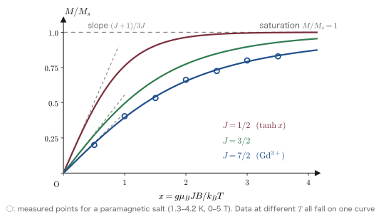
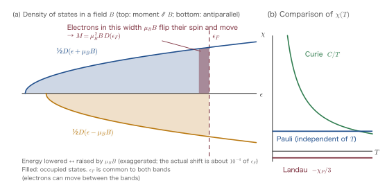
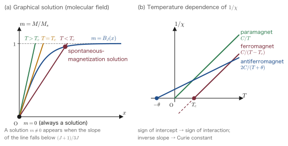
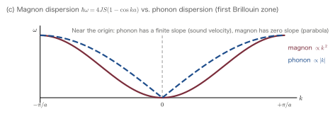

Chapter 20Magnetism
In Chapter 19 we saw how a solid responds when an electric field is applied—polarization and the dielectric constant. This chapter is its dual. We treat how a solid responds when a magnetic field is applied and, more interestingly, why a solid can magnetize spontaneously even when no magnetic field is applied.
Magnetism occupies a special place in solid-state physics, because magnetism is an essentially quantum-mechanical phenomenon. There is an old theorem, the van Leeuwen theorem, by which one can prove that “as long as one follows classical statistical mechanics faithfully, the magnetization in equilibrium vanishes identically.” The very fact that magnets exist, which even a child knows, cannot be explained by classical physics. Behind magnetism, the Pauli exclusion principle and spin always make their appearance.
The climax of this chapter is Sections 20.7 and 20.8. In 1907 Weiss assumed that “inside a magnetic material there exists an enormous molecular field $B_E=\lambda M$ proportional to the magnetization,” and thereby explained the Curie temperature of ferromagnetism and the Curie–Weiss law beautifully. However, when we actually estimate the magnitude of the magnetic field that this $\lambda$ demands, it comes out as $10^7\,\mathrm{G}$ ($10^3\,\mathrm{T}$), which is larger by orders of magnitude than any steady magnetic field that can be produced, and comparable to the world record for destructive pulsed magnetic fields. The molecular field has no magnetic origin. Its true identity is the exchange interaction, a purely electrostatic interaction that arises from the combination of Coulomb repulsion and the Pauli principle. This is the highest peak of the chapter.
This chapter is also one in which the tools of group theory built in Part II prove effective in an unexpected place. For 3d transition-metal ions, the effective number of Bohr magnetons calculated from Hund's rules does not agree with the measured values at all. To obtain agreement, we must calculate as if there were “no orbital angular momentum.” Why does the orbital angular momentum disappear? The answer is prepared for us by the projection operators of Chapter 9 and the crystal-field splitting of Chapter 10. In a crystal field, real orbitals such as $d_{xy}$ become the eigenfunctions, and for a real function $\braket{L_z}=0$ holds identically. Group theory, which seemed abstract, explains an extremely concrete number: the measured value of the magnetic susceptibility.
- The definitions of the magnetization $M$ and the magnetic susceptibility $\chi$, the correspondence between Gaussian units and SI, and the order of magnitude of $\chi$ for each kind of material
- Deriving Langevin diamagnetism $\chi=-\dfrac{NZe^2}{6mc^2}\braket{r^2}$ from Larmor precession (down to the factor in $\braket{\rho^2}=\frac23\braket{r^2}$)
- Deriving the Brillouin function $B_J(x)$ from the geometric-series sum of the partition function, and checking that it reduces to $\tanh$ for $J=1/2$ and to the Curie law for $x\ll1$
- Hund's three rules and their physical reasons, and actually finding the ground terms of $\mathrm{Fe^{3+}},\mathrm{Mn^{2+}},\mathrm{Nd^{3+}},\mathrm{Dy^{3+}}$
- Quenching of orbital angular momentum—why $p=2\sqrt{S(S+1)}$ for 3d ions (group theory of Chapters 9 and 10)
- Pauli paramagnetism $\chi_P=\mu_B^2 D(\epsilon_F)$ and Landau diamagnetism $\chi_L=-\frac13\chi_P$
- Weiss's molecular-field theory: the graphical solution of the self-consistent equation, the derivation of $T_c$, the Curie–Weiss law, and the nonmagnetic origin of the molecular field
- The exchange interaction: the Heitler–London calculation, the Heisenberg model, direct exchange, superexchange, double exchange, and RKKY
- Antiferromagnetism: the two-sublattice molecular field, $T_N=\mu C$, $\chi_\parallel$ and $\chi_\perp$, and ferrimagnetism
- Magnetic domains and spin waves: the thickness of a Bloch wall, the complete derivation of the magnon dispersion $\hbar\omega=4JS(1-\cos ka)$, and Bloch's $T^{3/2}$ law
20.1 Magnetization and Magnetic Susceptibility — Definitions, Units, and Orders of Magnitude
20.1.1 Definitions
Definition: Magnetization and magnetic susceptibility
The magnetization $\bm{M}$ is the magnetic moment per unit volume. If the $i$th atom in a sample of volume $V$ has magnetic moment $\bm{\mu}_i$, then
$$ \bm{M} = \frac{1}{V}\sum_i \bm{\mu}_i $$The magnetic susceptibility $\chi$ (also called the susceptibility) is the response coefficient of the magnetization to the external magnetic field. In Gaussian units (the system adopted by Kittel),
In SI units, the susceptibility is defined as $\chi=M/H$. Both are dimensionless, but their numerical values differ through the relation $\chi_{\rm SI}=4\pi\chi_{\rm CGS}$.
Caution: $\chi=M/B$ and $\chi=M/H$ are not the same
In Gaussian units, $B=H+4\pi M$. Therefore $M/B$ and $M/H$ are strictly different quantities, and they are related by
$$ \frac{M}{H} = \frac{M}{B-4\pi M} = \frac{M/B}{1-4\pi (M/B)} $$However, for paramagnets and diamagnets $\abs{\chi}\sim10^{-6}$, so that $4\pi\chi\sim10^{-5}\ll1$, and the difference between the two can be neglected. This is why Kittel can get by with $\chi=M/B$ throughout.
The difference matters when $\chi$ is of order $1$, that is, for ferromagnets and superconductors. In a superconductor, which is a perfect diamagnet, $B=0$ is realized, so $M/H=-1/4\pi$ (CGS) and $\chi_{\rm SI}=-1$. $M/B$ diverges and cannot be used. Below, whenever we write $\chi$ in this chapter up to Section 20.7, we ignore the difference between $M/B$ (CGS) and $M/H$, and add the SI conversion where necessary. However, in Table 20.1 and Table 20.2, which include superconductors and ferromagnets, we use the definition $M/H$, for which $\chi_{\rm SI}=4\pi\chi_{\rm CGS}$ holds exactly.
One more point deserves attention: the $B$ in Eq. \eqref{eq:20-chi-def} is properly the applied magnetic field (Kittel's $B_a$), not the total magnetic flux density $B=H+4\pi M$ inside the material. In CGS the numerical values of $B_a$ and $H_a$ coincide in vacuum, so in the range $\abs{\chi}\ll1$, as for paramagnets and diamagnets, there is no need to distinguish the two. The distinction becomes necessary, again, for ferromagnets and superconductors.
20.1.2 Units — Gaussian units and SI
In the field of magnetism, the overwhelming majority of the literature is still written in Gaussian units (CGS-emu). Kittel also uses Gaussian units. On the other hand, the readouts of experimental instruments and recent papers use SI. Because being able to move back and forth between the two is indispensable in practice, we prepare a correspondence table.
| Quantity | Gaussian units | SI | Conversion |
|---|---|---|---|
| Magnetic flux density $B$ | gauss $\mathrm{G}$ | tesla $\mathrm{T}$ | $1\,\mathrm{T}=10^4\,\mathrm{G}$ |
| Magnetic field $H$ | oersted $\mathrm{Oe}$ | $\mathrm{A/m}$ | $1\,\mathrm{Oe}=\dfrac{10^3}{4\pi}\,\mathrm{A/m}=79.58\,\mathrm{A/m}$ |
| Magnetization $M$ | $\mathrm{emu/cm^3}$ ($=\mathrm{G}$) | $\mathrm{A/m}$ | $1\,\mathrm{emu/cm^3}=10^3\,\mathrm{A/m}$ |
| Constitutive equation | $B=H+4\pi M$ | $B=\mu_0(H+M)$ | $\mu_0=4\pi\times10^{-7}\,\mathrm{T\,m/A}$ |
| Magnetic susceptibility $\chi$ | dimensionless ($M/H$) | dimensionless ($M/H$) | $\chi_{\rm SI}=4\pi\,\chi_{\rm CGS}$ |
| Molar magnetic susceptibility | $\mathrm{cm^3/mol}$ | $\mathrm{m^3/mol}$ | $1\,\mathrm{cm^3/mol}=4\pi\times10^{-6}\,\mathrm{m^3/mol}$ |
| Magnetic moment $\mu$ | $\mathrm{erg/G}$ | $\mathrm{J/T}=\mathrm{A\,m^2}$ | $1\,\mathrm{erg/G}=10^{-3}\,\mathrm{J/T}$ |
| Bohr magneton $\mu_B$ | $9.274\times10^{-21}\,\mathrm{erg/G}$ | $9.274\times10^{-24}\,\mathrm{J/T}$ | $\mu_B=\dfrac{e\hbar}{2mc}$ (CGS) $=\dfrac{e\hbar}{2m}$ (SI) |
| $\mu$ of a current loop | $\mu=IA/c$ | $\mu=IA$ | Note the presence or absence of $c$ |
Supplement: A mechanical recipe for converting Gaussian-unit equations to SI
To rewrite the equations of this chapter in SI, it suffices to make the following substitutions.
- $c\to 1$ (that is, delete the places where $c$ originally appeared, as in $IA/c\to IA$ for the moment of a current loop)
- $\chi=M/B \to \chi=\mu_0 M/B$ (that is, to obtain $\chi_{\rm SI}$, multiply the CGS equation by $\mu_0$)
- $\mu_B=e\hbar/2mc \to e\hbar/2m$
For example, the Langevin diamagnetism of Section 20.2 reads $\chi=-NZe^2\braket{r^2}/6mc^2$ in CGS and $\chi=-\mu_0 NZe^2\braket{r^2}/6m$ in SI.
20.1.3 Orders of magnitude of the susceptibility — how large is it?
Before getting into the formulas, we want to build a feel for how large a number the quantity $\chi$ is.
| Category | Example material | $\chi_{\rm CGS}$ | $\chi_{\rm SI}=4\pi\chi_{\rm CGS}$ | Origin |
|---|---|---|---|---|
| Perfect diamagnetism | Superconductor ($T\lt T_c$) | $-1/4\pi=-0.080$ | $-1$ | Meissner effect (screening current) |
| Diamagnetism | Water $\mathrm{H_2O}$ | $-0.72\times10^{-6}$ | $-9.0\times10^{-6}$ | Langevin diamagnetism (Section 20.2) |
| Diamagnetism | $\mathrm{Cu}$ | $-0.77\times10^{-6}$ | $-9.7\times10^{-6}$ | Diamagnetism of the closed shell $3d^{10}$ + Landau |
| Diamagnetism (unusually large) | Graphite ($c$ axis) | $-30\times10^{-6}$ | $-3.8\times10^{-4}$ | Itinerant character of the orbitals (band diamagnetism) |
| Pauli paramagnetism | $\mathrm{Na}$ | $+0.68\times10^{-6}$ | $+8.6\times10^{-6}$ | Conduction-electron spin (Section 20.6) |
| Pauli paramagnetism (enhanced) | $\mathrm{Pd}$ | $+63\times10^{-6}$ | $+7.9\times10^{-4}$ | Large $D(\epsilon_F)$ + Stoner enhancement |
| Localized-moment paramagnetism | $\mathrm{Gd_2(SO_4)_3\cdot8H_2O}$ | $\sim+2\times10^{-4}$ | $\sim+2.5\times10^{-3}$ | Curie law (Section 20.3) |
| Ferromagnetism | $\mathrm{Fe}$ (initial permeability) | $\sim10^{3}$–$10^{4}$ | $\sim10^{4}$–$10^{5}$ | Domain-wall motion (Section 20.10) |
Physical Meaning: Three things to read from this table
- Diamagnetism is always present in every material. The value $\chi_{\rm CGS}\simeq-10^{-6}$ is of almost the same order for water, copper, and rock salt. This is because Langevin diamagnetism is determined only by the “size of the electron cloud” $\braket{r^2}$, and so has roughly the same magnitude regardless of the material (Section 20.2).
- Paramagnetism can be two to three orders of magnitude larger than diamagnetism. When unpaired electrons (localized moments) are present, $\chi$ jumps to the order of $10^{-4}$. Hence, if even a single paramagnetic ion is present, the diamagnetism is completely buried. Conversely, to measure diamagnetism one needs a sample that contains no unpaired electrons.
- Ferromagnetism is larger still, by more than seven orders of magnitude. A jump of this size cannot be explained by the picture of “responding to a magnetic field.” Ferromagnetism is a state that is magnetized even without a magnetic field, and the measured $\chi$ merely expresses “how easily the domain walls move.” The physics is entirely different (Section 20.7 and Section 20.10).
Why? Magnetism does not exist in classical physics (the van Leeuwen theorem)
To introduce a magnetic field into the classical Hamiltonian of a system of charged particles, we replace the momentum by $\bm{p}\to\bm{p}+\frac{e}{c}\bm{A}(\rr)$ (minimal coupling). The partition function then becomes
$$ Z = \frac{1}{h^{3N}N!}\int \dd^{3N}r\,\dd^{3N}p\; \exp\!\left[-\beta\sum_i\frac{(\bm{p}_i+\frac{e}{c}\bm{A}(\rr_i))^2}{2m}-\beta U(\{\rr\})\right] $$Here, for each particle, we change the integration variable to $\bm{p}_i'=\bm{p}_i+\frac{e}{c}\bm{A}(\rr_i)$. Since we integrate over $\bm{p}_i$ with $\rr_i$ held fixed, this is a mere translation: the range of integration remains $-\infty$ to $+\infty$ and the Jacobian is $1$. Therefore
$$ Z(\bm{A}) = Z(\bm{0}) $$The partition function does not depend at all on the magnetic field (the vector potential). The free energy $F=-k_BT\ln Z$ is therefore also independent of the magnetic field, and the magnetization is $M=-\partial F/\partial B=0$. This is the van Leeuwen theorem (1919).
In other words, the very fact that magnets exist is evidence for quantum mechanics. Every kind of magnetism that appears in this chapter—diamagnetism, paramagnetism, and ferromagnetism alike—uses quantum mechanics (discrete energy levels, spin, the Pauli principle) somewhere. Even the Langevin diamagnetism of Section 20.2 uses the quantum-mechanical fact that the electrons are bound around the atomic nucleus so that $\braket{r^2}$ remains finite.
20.2 Langevin Diamagnetism — From Larmor Precession
Diamagnetism is the phenomenon in which “when a magnetic field is applied, a magnetization appears in the direction that cancels it.” We may think of it as the atomic version of Lenz's law. As the magnetic field is increased, an induced electromotive force acts on the electron orbits in the atom, and a current flows in the direction that cancels the field. Since an atom has no electrical resistance, this current keeps flowing for as long as the field is applied.
20.2.1 Larmor's theorem
Theorem 20.1 (Larmor's theorem)
A uniform magnetic field $\bm{B}$ is applied to an electron moving in a central force field. Then, to first order in $\bm{B}$, the motion of the electron is equal to the motion in the absence of the field, rotated with the angular velocity
and precessing about $\bm{B}$. We call $\omega_L$ the Larmor frequency.
Derivation: Moving to a rotating frame to eliminate the Lorentz force
In Gaussian units, the equation of motion of an electron of charge $-e$ ($e\gt0$ is the elementary charge) is
$$ m\frac{\dd^2\rr}{\dd t^2} = \bm{F}_{\rm c}(\rr) - \frac{e}{c}\,\dot{\rr}\times\bm{B} $$where $\bm{F}_{\rm c}$ is the central force due to the atomic nucleus (a function of $\rr$ only).
Step 1: Move to a rotating frame. Consider a coordinate system rotating with angular velocity vector $\bm{\omega}$. For an arbitrary vector $\bm{V}$, the time derivative in the stationary frame and that in the rotating frame are related by
$$ \left(\frac{\dd \bm{V}}{\dd t}\right)_{\rm lab} = \left(\frac{\dd \bm{V}}{\dd t}\right)_{\rm rot} + \bm{\omega}\times\bm{V} $$. Applying this to $\bm{V}=\rr$ and then applying it once more, we obtain
$$ \left(\frac{\dd^2 \rr}{\dd t^2}\right)_{\rm lab} = \left(\frac{\dd^2 \rr}{\dd t^2}\right)_{\rm rot} + 2\,\bm{\omega}\times\left(\frac{\dd \rr}{\dd t}\right)_{\rm rot} + \bm{\omega}\times(\bm{\omega}\times\rr) $$The second term is the Coriolis term and the third is the centrifugal term.
Step 2: Substitute into the equation of motion. From here on, we write the derivative in the rotating frame simply as $\dot{\rr}$. Noting also that $\left(\dd\rr/\dd t\right)_{\rm lab}=\dot{\rr}+\bm{\omega}\times\rr$, we have
$$ m\ddot{\rr} + 2m\,\bm{\omega}\times\dot{\rr} + m\,\bm{\omega}\times(\bm{\omega}\times\rr) = \bm{F}_{\rm c} - \frac{e}{c}(\dot{\rr}+\bm{\omega}\times\rr)\times\bm{B} $$Rearranging and solving for $m\ddot{\rr}$, we obtain
$$ m\ddot{\rr} = \bm{F}_{\rm c} \underbrace{- \frac{e}{c}\,\dot{\rr}\times\bm{B} - 2m\,\bm{\omega}\times\dot{\rr}}_{\text{(A): }\dot{\rr}\text{ appears linearly}} \underbrace{- \frac{e}{c}(\bm{\omega}\times\rr)\times\bm{B} - m\,\bm{\omega}\times(\bm{\omega}\times\rr)}_{\text{(B): no }\dot{\rr}\text{ appears}} $$Step 3: Choose $\bm{\omega}$ so as to eliminate (A). The condition for (A) to vanish is
$$ - \frac{e}{c}\,\dot{\rr}\times\bm{B} = 2m\,\bm{\omega}\times\dot{\rr} $$. We rewrite the left-hand side. Since $\dot{\rr}\times\bm{B} = -\bm{B}\times\dot{\rr}$,
$$ \frac{e}{c}\,\bm{B}\times\dot{\rr} = 2m\,\bm{\omega}\times\dot{\rr} \quad\Longrightarrow\quad \left(\frac{e}{2mc}\bm{B}-\bm{\omega}\right)\times\dot{\rr}=0 $$For this to hold for arbitrary $\dot{\rr}$, we must have
$$ \bm{\omega} = \frac{e\bm{B}}{2mc}, \qquad \omega_L = \frac{eB}{2mc} $$. This is Eq. \eqref{eq:20-larmor}.
Step 4: The remaining terms (B) are of order $B^2$. Since $\bm{\omega}\propto\bm{B}$, both terms of (B) are proportional to $B^2$. As long as we are concerned only with first order in the magnetic field, they may be neglected. In the end, in the rotating frame we have
$$ m\ddot{\rr} = \bm{F}_{\rm c}(\rr) + O(B^2) $$which has exactly the same form as the equation of motion in the absence of the field. ∎
That is, the motion of the electron seen from the laboratory frame is nothing other than the “orbit without the field” precessing as a whole with angular velocity $\omega_L$. This is Larmor's theorem.
Supplement: The numerical value of $\omega_L$, and why “first order” is enough
For $B=1\,\mathrm{T}=10^4\,\mathrm{G}$, in SI, $\omega_L=eB/2m = (1.602\times10^{-19})(1)/(2\times9.109\times10^{-31}) = 8.79\times10^{10}\,\mathrm{s^{-1}}$, that is, $\nu_L=\omega_L/2\pi=14.0\,\mathrm{GHz}$.
On the other hand, the frequency of the orbital motion of an electron in an atom is of the order of $\sim10^{16}\,\mathrm{s^{-1}}$. Taking the ratio, $\omega_L/\omega_{\rm orbit}\sim10^{-5}$. The precession is extraordinarily slow compared with the orbital motion. This means that the $B^2$ term is smaller than the $B$ term by a factor of $10^{-5}$, so for the magnetic fields that can be produced in the laboratory it is perfectly fine to truncate at first order.
Incidentally, $\omega_L$ is exactly half of the spin precession frequency (Larmor precession, $\omega=g\mu_B B/\hbar$, which for $g=2$ gives $\omega=eB/mc$). This factor of $2$ is a manifestation of the fact that the $g$ factor of the electron spin is $2$, not $1$.
20.2.2 Induced magnetic moment and magnetic susceptibility
Derivation: Langevin's diamagnetic susceptibility
Step 1: The current produced by the precession. Suppose the atom has $Z$ electrons. By Larmor's theorem, the whole electron cloud rotates about the magnetic field at $\omega_L$. This is nothing other than a circulating current.
A current is “the charge passing through a cross section per unit time.” One electron goes around the axis $\omega_L/2\pi$ times per second. Since the charge of the $Z$ electrons is $-Ze$,
$$ I = (\text{charge})\times(\text{number of revolutions per unit time}) = (-Ze)\cdot\frac{\omega_L}{2\pi} = -\frac{Ze}{2\pi}\cdot\frac{eB}{2mc} = -\frac{Ze^2B}{4\pi mc} $$Step 2: The magnetic moment of a current loop. In Gaussian units, when a current $I$ encloses an area $A$, the magnetic moment is $\mu=IA/c$. Here the “area” is the area obtained by projecting the electron orbit onto the plane perpendicular to the magnetic field direction (let us take this to be the $z$ axis). Writing the distance of the electron's position from the $z$ axis as $\rho$, the area is $\pi\rho^2$ and its average is $\pi\braket{\rho^2}$. Therefore
$$ \mu = \frac{I}{c}\cdot\pi\braket{\rho^2} = -\frac{Ze^2B}{4\pi mc}\cdot\frac{\pi\braket{\rho^2}}{c} = -\frac{Ze^2 B}{4mc^2}\braket{\rho^2} $$Here $\braket{\rho^2}=\braket{x^2+y^2}$ (the square of the distance from the $z$ axis).
Step 3: Convert $\braket{\rho^2}$ into $\braket{r^2}$ (take care here). We may assume that the electron cloud of the atom is spherically symmetric (which is precisely the case for closed-shell ions and noble gases). If it is spherically symmetric,
$$ \braket{x^2}=\braket{y^2}=\braket{z^2} $$. On the other hand, since $r^2=x^2+y^2+z^2$,
$$ \braket{r^2}=\braket{x^2}+\braket{y^2}+\braket{z^2}=3\braket{x^2} \quad\Longrightarrow\quad \braket{x^2}=\frac13\braket{r^2} $$Therefore
This $\frac23$ is the factor that produces the $6$ ($=4\times\frac32$) in the denominator of the final expression. If you mix this up, the coefficient comes out as $1/4$ or $1/6$. It is best to remember that $\braket{r^2}$ is the square of the distance from the origin, $\braket{\rho^2}$ is the square of the distance from the field axis, and only in the spherically symmetric case are the two related by the ratio $2:3$.
Step 4: Substitute.
$$ \mu = -\frac{Ze^2B}{4mc^2}\cdot\frac23\braket{r^2} = -\frac{Ze^2 B}{6mc^2}\braket{r^2} $$Step 5: Suppose there are $N$ atoms per unit volume, and construct the magnetization and the magnetic susceptibility.
$$ M = N\mu = -\frac{NZe^2 B}{6mc^2}\braket{r^2} $$∎ In SI, this becomes $\chi = -\dfrac{\mu_0 NZe^2}{6m}\braket{r^2}$.
If there is only one electron, set $Z=1$. More precisely, since $\braket{r_i^2}$ differs from electron to electron, we read $Z\braket{r^2}\to\sum_{i=1}^{Z}\braket{r_i^2}$.
Physical Meaning: What does Eq. \eqref{eq:20-langevin} say?
- The sign is always negative. The sign of the electron's charge ($-e$) enters in the form $e^2$ and therefore disappears. That is, whether the charge is positive or negative, $\chi$ is negative. This is Lenz's law itself. When a magnetic field is applied, an induced moment is always produced in the direction that weakens it.
- It does not depend on temperature. $T$ appears nowhere in the expression. Indeed, the diamagnetic susceptibility hardly changes from room temperature down to liquid-helium temperature. This is because there are “no degrees of freedom that compete with thermal motion.” This contrasts with the paramagnetism of Section 20.3, which acts as $1/T$.
- It is determined solely by the extent of the electron cloud. $\braket{r^2}$ is the only material-specific parameter. Hence measuring the diamagnetic susceptibility is nothing other than measuring the size of atoms and ions.
- Core-level electrons hardly contribute. In the sum of $\braket{r_i^2}$, what counts are the outer-shell electrons with large $r$. A $1s$ electron has $r\sim0.05\,\text{Å}$, so $\braket{r^2}\sim0.0025\,\text{Å}^2$ only, which is two to three orders of magnitude smaller than the $\sim1\,\text{Å}^2$ of the outer shell (roughly $1/400$).
20.2.3 Comparison with numerical values
Derivation: A convenient numerical formula for the molar susceptibility
Experimental values are usually given as the molar susceptibility $\chi_{\rm mol}$ (in units of $\mathrm{cm^3/mol}$). In Eq. \eqref{eq:20-langevin}, it suffices to replace $N\to N_A=6.022\times10^{23}\,\mathrm{mol^{-1}}$.
Here $e^2/mc^2$ is none other than the classical electron radius
$$ r_e \equiv \frac{e^2}{mc^2} = 2.818\times10^{-13}\,\mathrm{cm} $$. Using this, we have
$$ \chi_{\rm mol} = -\frac{N_A r_e}{6}\sum_i\braket{r_i^2} $$Inserting numbers,
$$ \frac{N_A r_e}{6} = \frac{(6.022\times10^{23})(2.818\times10^{-13})}{6} = \frac{1.697\times10^{11}}{6} = 2.828\times10^{10}\ \mathrm{cm\,mol^{-1}} $$If $\braket{r^2}$ is measured in units of $\text{Å}^2$, then since $1\,\text{Å}^2=10^{-16}\,\mathrm{cm^2}$,
∎ Conversely, solving for the sum, the extent of the electron cloud can be read off from the measured $\chi_{\rm mol}$.
| Atom | $Z$ | $\chi_{\rm mol}$ (measured) | $\sum_i\braket{r_i^2}$ $[\text{Å}^2]$ | $\sqrt{\sum\braket{r_i^2}/Z}$ $[\text{Å}]$ |
|---|---|---|---|---|
| $\mathrm{He}$ | 2 | $-1.9$ | $0.67$ | $0.58$ |
| $\mathrm{Ne}$ | 10 | $-7.2$ | $2.54$ | $0.50$ |
| $\mathrm{Ar}$ | 18 | $-19.4$ | $6.86$ | $0.62$ |
| $\mathrm{Kr}$ | 36 | $-28.0$ | $9.89$ | $0.52$ |
| $\mathrm{Xe}$ | 54 | $-43.0$ | $15.2$ | $0.53$ |
Example 20.1: Can the diamagnetism of Xe be explained by the outer-shell electrons alone?
According to Table 20.3, for $\mathrm{Xe}$ ($Z=54$) we have $\sum_i\braket{r_i^2}=15.2\,\text{Å}^2$. The outermost shell of $\mathrm{Xe}$ consists of the eight electrons of $5s^25p^6$, whose mean radius is about $1.3\,\text{Å}$. Verify whether these eight electrons alone can explain the measured value.
Solution. Counting only the eight outermost electrons,
$$ \sum_{i\in 5s5p}\braket{r_i^2} \simeq 8\times(1.3\,\text{Å})^2 = 8\times1.69 = 13.5\ \text{Å}^2 $$Thus just eight outer-shell electrons account for $89\%$ of the $15.2\,\text{Å}^2$ back-calculated from the measurement. The contribution of the remaining 46 core-level electrons is $1.7\,\text{Å}^2$, only $0.037\,\text{Å}^2$ per electron ($r\sim0.19\,\text{Å}$).
This confirms numerically the statement of Section 20.2.2 that the sum of $\braket{r^2}$ is “determined by the outer-shell electrons.” At the same time, we understand why the last column of Table 20.3 (the rms radius averaged over all electrons) levels off at about $0.5$–$0.6\,\text{Å}$ almost independently of $Z$. As $Z$ increases the outer shell expands, but the number of strongly attracted core-level electrons also increases, so on average the two effects cancel. The numbers in this column are not “the size of the atom.” What is meaningful is the sum $\sum_i\braket{r_i^2}$.
Example 20.2: Comparing $\braket{r^2}$ along an isoelectronic series
$\mathrm{Ne}$, $\mathrm{Na^+}$, and $\mathrm{F^-}$ are all closed shells of ten electrons ($1s^22s^22p^6$). The measured molar susceptibilities (in units of $10^{-6}\,\mathrm{cm^3/mol}$) are $\mathrm{Ne}:-7.2$, $\mathrm{Na^+}:-6.1$, and $\mathrm{F^-}:-9.4$. Explain this ordering of magnitudes.
Solution. Back-calculating with Eq. \eqref{eq:20-langevin-num}, we obtain
$$ \sum\braket{r^2}:\quad \mathrm{Na^+}:2.16\ \text{Å}^2 \ \lt\ \mathrm{Ne}:2.54\ \text{Å}^2\ \lt\ \mathrm{F^-}:3.32\ \text{Å}^2 $$Since all three have the same number of electrons, namely ten, the only difference is the nuclear charge: $+11$ for $\mathrm{Na^+}$, $+10$ for $\mathrm{Ne}$, and $+9$ for $\mathrm{F^-}$. The larger the nuclear charge, the more strongly the electron cloud is drawn in and the more it shrinks, so $\braket{r^2}$ becomes smaller. The measurements show exactly this expected order.
In an era without ionic-radius gauges, the diamagnetic susceptibility was a means of measuring the size of ions. The table of ionic radii treated in Chapter 1 was assembled from both the interatomic distances obtained by X-ray diffraction and diamagnetic measurements of this kind.
Caution: Langevin's formula breaks down in molecules and metals
Eq. \eqref{eq:20-langevin} presupposes that “the electrons are bound spherically symmetrically to the atomic nucleus.” It does not hold in the following cases.
- Aromatic molecules and graphite: The $\pi$ electrons are delocalized over the whole molecule or layer, so $\braket{\rho^2}$ is set not by the size of an atom but by the size of the molecule or layer. This is the origin of the ring-current diamagnetism of benzene and of the huge diamagnetism of graphite along the $c$ axis (Table 20.2). The ring-current shift in NMR has the same origin.
- Metals: Conduction electrons show diamagnetism through a different mechanism, Landau diamagnetism (Section 20.6). In addition, it competes with Pauli paramagnetism.
- Bi, semimetals: When the effective mass $m^*$ is small, Landau diamagnetism is enhanced by a factor $(m/m^*)^2$. In $\mathrm{Bi}$, $m^*\sim0.01m$, so the enhancement is as large as $10^4$, and Bi shows $\chi_{\rm CGS}\simeq-1.4\times10^{-5}$, an anomalously large diamagnetism for an elemental substance.
20.3 Paramagnetism and the Brillouin Function
Paramagnetism appears when a material contains permanent magnetic moments from the outset. In the absence of a magnetic field the moments point in random directions, and their average is zero. When a magnetic field is applied, the moments try to align with the field, while thermal motion tries to destroy that alignment. Calculating the outcome of this tug-of-war is the task of this section.
20.3.1 Where does a permanent moment come from?
Definition: Magnetic moment and the $g$-factor
For an atom or ion with total angular momentum $\bm{J}$ (in units of $\hbar$), the magnetic moment operator can be written as
Here $\mu_B$ is called the Bohr magneton and $g$ is called the Landé $g$-factor (the $g$ factor). The minus sign comes from the negative charge of the electron: the magnetic moment is antiparallel to the angular momentum.
The value of $g$ is given by
It is worth checking by substitution into the formula that $g=1$ for orbital motion only ($S=0$, $J=L$) and $g=2$ for spin only ($L=0$, $J=S$).
Supplement: Checking $g=1$ and $g=2$ with Eq. \eqref{eq:20-lande}
Orbital motion only ($S=0$, $J=L$): since $S(S+1)=0$ and $L(L+1)=J(J+1)$,
$$ g = 1+\frac{J(J+1)+0-J(J+1)}{2J(J+1)} = 1+0 = 1 $$Spin only ($L=0$, $J=S$): since $L(L+1)=0$ and $S(S+1)=J(J+1)$,
$$ g = 1+\frac{J(J+1)+J(J+1)-0}{2J(J+1)} = 1+1 = 2 $$That the $g$-factor of the electron spin is $2$ (more precisely, $2.0023$) follows from the Dirac equation. The fact that it is not $1$ appeared in Section 20.2.2 as the factor-of-two difference between the Larmor frequency $\omega_L=eB/2mc$ and the spin precession $\omega=eB/mc$.
20.3.2 Obtaining the magnetization from the partition function
Derivation: The Brillouin function (every step of the geometric-series sum written out)
Step 1: Energy levels. In a magnetic field $\bm{B}=B\hat{z}$ the energy is $U=-\bm{\mu}\cdot\bm{B}=g\mu_B B J_z$. Writing the eigenvalue of $J_z$ as $m$, we have
$$ U_m = m\,g\mu_B B, \qquad m = -J,\,-J+1,\,\ldots,\,J-1,\,J $$In all, $2J+1$ levels are lined up with equal spacing $g\mu_B B$ (Zeeman splitting). The levels with negative $m$ (moment in the same direction as the field) have the lower energy.
Step 2: Partition function. To shorten the notation, let
Here $a$ is “the ratio of the spacing between adjacent Zeeman levels to the thermal energy,” and $x$ is “the ratio of the energy that the maximum moment $g\mu_B J$ receives from the field to the thermal energy.” The partition function is
$$ Z = \sum_{m=-J}^{J}\ee^{-U_m/k_BT} = \sum_{m=-J}^{J}\ee^{-ma} $$Now we replace the summation variable $m\to-m$. Since $m$ runs symmetrically from $-J$ to $J$, the range of the sum does not change under this replacement. Therefore
Step 3: Carrying out the geometric-series sum (Method 1: the straightforward way). Eq. \eqref{eq:20-Z} is the sum of a geometric sequence with first term $\ee^{-Ja}$, common ratio $\ee^{a}$, and $2J+1$ terms.
$$ Z = \ee^{-Ja}\left(1+\ee^{a}+\ee^{2a}+\cdots+\ee^{2Ja}\right) = \ee^{-Ja}\cdot\frac{\ee^{(2J+1)a}-1}{\ee^{a}-1} $$We factor out “half” of the exponent from the numerator and the denominator separately: the factor $\ee^{(2J+1)a/2}$ from the numerator and $\ee^{a/2}$ from the denominator, which gives
$$ \frac{\ee^{(2J+1)a}-1}{\ee^{a}-1} = \frac{\ee^{(2J+1)a/2}\left(\ee^{(2J+1)a/2}-\ee^{-(2J+1)a/2}\right)}{\ee^{a/2}\left(\ee^{a/2}-\ee^{-a/2}\right)} = \ee^{Ja}\cdot\frac{2\sinh\frac{(2J+1)a}{2}}{2\sinh\frac{a}{2}} $$(The prefactor of the exponentials is $\ee^{(2J+1)a/2-a/2}=\ee^{Ja}$.) Substituting this, it cancels against $\ee^{-Ja}$, and we obtain
Step 3′: The same result by a telescoping sum (Method 2: this one is more elegant). Multiply both sides of Eq. \eqref{eq:20-Z} by $\left(\ee^{a/2}-\ee^{-a/2}\right)$.
$$ \left(\ee^{a/2}-\ee^{-a/2}\right)Z = \sum_{m=-J}^{J}\left(\ee^{(m+\frac12)a}-\ee^{(m-\frac12)a}\right) $$On the right-hand side, the first part $\ee^{(m+\frac12)a}$ of the $m$th term and the second part $\ee^{(m+1-\frac12)a}=\ee^{(m+\frac12)a}$ of the term for $m+1$ cancel exactly, since they have opposite signs. The terms cancel one after another (a telescoping sum), and what finally remains is only the first part of the $m=J$ term and the second part of the $m=-J$ term.
$$ \left(\ee^{a/2}-\ee^{-a/2}\right)Z = \ee^{(J+\frac12)a}-\ee^{-(J+\frac12)a} $$ $$ 2\sinh\frac{a}{2}\cdot Z = 2\sinh\left[\left(J+\tfrac12\right)a\right] $$Thus Eq. \eqref{eq:20-Z-sinh} has been obtained again.
Step 4: Extracting the magnetization from the partition function. The thermal average of $m$ is obtained by differentiating $Z=\sum_m\ee^{ma}$ with respect to $a$.
$$ \frac{\partial Z}{\partial a} = \sum_{m}m\,\ee^{ma} \quad\Longrightarrow\quad \braket{m} = \frac{1}{Z}\sum_m m\,\ee^{ma} = \frac{1}{Z}\frac{\partial Z}{\partial a} = \frac{\partial \ln Z}{\partial a} $$The magnetization is the thermal average of the moment $\mu_z=-g\mu_B m$ in the $z$ direction multiplied by the number density. However, if we restore the sign that was flipped in Eq. \eqref{eq:20-Z}, then for the $m$ averaged with the weight $\ee^{+ma}$ we have $M=+Ng\mu_B\braket{m}$ (the magnetization points in the same direction as the field, so the sign must be positive).
$$ M = N g\mu_B\,\frac{\partial \ln Z}{\partial a} $$Step 5: Carrying out the differentiation. The logarithm of Eq. \eqref{eq:20-Z-sinh} is
$$ \ln Z = \ln\sinh\left[\left(J+\tfrac12\right)a\right] - \ln\sinh\frac{a}{2} $$Using $\dfrac{\dd}{\dd y}\ln\sinh y = \dfrac{\cosh y}{\sinh y}=\coth y$ and the chain rule, we obtain
$$ \frac{\partial \ln Z}{\partial a} = \left(J+\tfrac12\right)\coth\left[\left(J+\tfrac12\right)a\right] - \tfrac12\coth\frac{a}{2} $$Therefore
$$ M = Ng\mu_B\left\{\left(J+\tfrac12\right)\coth\left[\left(J+\tfrac12\right)a\right] - \tfrac12\coth\frac{a}{2}\right\} $$Step 6: Rewriting in terms of $x=Ja$. Substitute $a=x/J$. Factoring $J$ out of the braces, we have
$$ \left(J+\tfrac12\right)a = \frac{2J+1}{2}\cdot\frac{x}{J}=\frac{(2J+1)x}{2J}, \qquad \frac{a}{2}=\frac{x}{2J} $$ $$ J+\tfrac12 = J\cdot\frac{2J+1}{2J}, \qquad \tfrac12 = J\cdot\frac{1}{2J} $$so that
$$ M = Ng\mu_B J\left\{\frac{2J+1}{2J}\coth\frac{(2J+1)x}{2J}-\frac{1}{2J}\coth\frac{x}{2J}\right\} $$The content of the curly braces is called the Brillouin function. ∎
Physical Meaning: What does Eq. \eqref{eq:20-brillouin} say?
The prefactor $Ng\mu_B J$ is the magnetization when all the moments are perfectly aligned, that is, the saturation magnetization $M_s$. Therefore Eq. \eqref{eq:20-brillouin} can be read as
$$ \frac{M}{M_s} = B_J(x) $$$B_J(x)$ is an index of the degree of alignment, expressing “how well the moments are aligned” as a number from $0$ to $1$.
The only variable that determines the degree of alignment is $x=g\mu_B JB/k_BT$, that is, the ratio of the magnetic energy to the thermal energy. $B$ and $T$ do not act separately; only the combination $B/T$ matters. Therefore, if $M$ measured at various temperatures is plotted as a function of $B/T$, all the points should fall on a single curve. They actually do (Figure 20.1). This is the most direct test of the theory of paramagnetism.
20.3.3 Two limits — saturation and the Curie law
Derivation: For $J=1/2$, $B_{1/2}(x)=\tanh x$
Substitute $J=1/2$ into Eq. \eqref{eq:20-brillouin}. Since $2J=1$ and $2J+1=2$,
$$ B_{1/2}(x) = \frac{2}{1}\coth\frac{2x}{1}-\frac{1}{1}\coth\frac{x}{1} = 2\coth 2x - \coth x $$Now we use the double-angle formulas. Since $\cosh2x=\cosh^2x+\sinh^2x$ and $\sinh2x=2\sinh x\cosh x$,
$$ \coth 2x = \frac{\cosh^2x+\sinh^2x}{2\sinh x\cosh x} = \frac12\left(\frac{\cosh x}{\sinh x}+\frac{\sinh x}{\cosh x}\right) = \frac12\left(\coth x + \tanh x\right) $$Therefore
$$ 2\coth2x = \coth x+\tanh x \quad\Longrightarrow\quad B_{1/2}(x) = \coth x+\tanh x-\coth x = \tanh x $$∎ In this case $M=N g\mu_B\cdot\frac12\tanh x = N\mu_B\tanh(\mu_B B/k_BT)$ (since $g=2$ and $J=S=1/2$, $x=\mu_B B/k_BT$). The familiar result of statistical mechanics, that the magnetization of a spin-$1/2$ two-level system is a $\tanh$, is thus contained as a special case.
Derivation: For $x\gg1$ (strong field, low temperature) the magnetization saturates
As $y\to\infty$, $\coth y = \dfrac{\ee^y+\ee^{-y}}{\ee^y-\ee^{-y}}\to1$. The arguments of the two $\coth$ functions in Eq. \eqref{eq:20-brillouin} are both proportional to $x$, so both approach $1$, and
$$ B_J(\infty) = \frac{2J+1}{2J}-\frac{1}{2J} = \frac{2J}{2J} = 1 $$∎ That is, $M\to M_s=Ng\mu_B J$. This is the state in which all the moments are perfectly aligned along the field direction.
Strictly speaking, however, quantum-mechanically $\braket{J_z}=-J$ (the $m=-J$ state is completely occupied), so for the moment we have $\braket{\mu_z}=+g\mu_B J$, and the moment vector does not become “parallel to the field.” Since $\abs{\bm{J}}=\sqrt{J(J+1)}\gt J$, the moment always precesses while keeping a finite angle with the field. The distinction that $J$, and not $\sqrt{J(J+1)}$, appears in the saturation magnetization will become important in Section 20.4.
Derivation: For $x\ll1$ (weak field, high temperature) the Curie law results
Step 1: Preparing the expansion of $\coth$. As $y\to0$,
(How to check: from $\sinh y = y+\frac{y^3}{6}+\cdots$ and $\cosh y=1+\frac{y^2}{2}+\cdots$, $\coth y = \frac{1+y^2/2}{y(1+y^2/6)} = \frac1y\left(1+\frac{y^2}{2}\right)\left(1-\frac{y^2}{6}+\cdots\right)=\frac1y\left(1+\frac{y^2}{3}+\cdots\right)=\frac1y+\frac y3+\cdots$.)
Step 2: Applying it to the two $\coth$ functions. Let $y_1=\dfrac{(2J+1)x}{2J}$ and $y_2=\dfrac{x}{2J}$.
$$ \frac{2J+1}{2J}\coth y_1 = \frac{2J+1}{2J}\left[\frac{2J}{(2J+1)x}+\frac{(2J+1)x}{6J}\right] = \frac{1}{x}+\frac{(2J+1)^2x}{12J^2} $$ $$ \frac{1}{2J}\coth y_2 = \frac{1}{2J}\left[\frac{2J}{x}+\frac{x}{6J}\right] = \frac{1}{x}+\frac{x}{12J^2} $$Step 3: Subtracting. The key point is that the $1/x$ terms cancel cleanly (if they did not, $M$ would diverge as $B\to0$).
$$ B_J(x) \simeq \frac{(2J+1)^2x}{12J^2}-\frac{x}{12J^2} = \frac{x}{12J^2}\left[(2J+1)^2-1\right] $$Expanding the bracket gives $(4J^2+4J+1)-1 = 4J(J+1)$. Therefore
This is the slope of $B_J$ at the origin (this slope plays a decisive role in Section 20.7).
Step 4: Magnetization and magnetic susceptibility. Substitute into Eq. \eqref{eq:20-brillouin} and restore $x=g\mu_BJB/k_BT$.
$$ M = Ng\mu_B J\cdot\frac{J+1}{3J}\cdot\frac{g\mu_B J B}{k_BT} = \frac{N g^2\mu_B^2 J(J+1)B}{3k_BT} $$(Note the cancellation of $J$: $J\cdot\frac{J+1}{3J}\cdot J = \frac{J(J+1)}{3}$.) Hence
∎ This is the Curie law. $C$ is called the Curie constant and $p$ the effective number of Bohr magnetons.
Why? Why does $\chi\propto1/T$ hold — an explanation without equations
The energy gain of a moment $\mu$ from the magnetic field is $\mu B$, and the thermal energy that tries to destroy the alignment is $k_BT$. The degree of alignment is determined by the ratio $\mu B/k_BT$. In a weak field the degree of alignment is proportional to this ratio, so
$$ \braket{\mu_z}\sim\mu\cdot\frac{\mu B}{k_BT}=\frac{\mu^2B}{k_BT} \quad\Longrightarrow\quad \chi = \frac{N\braket{\mu_z}}{B}\sim\frac{N\mu^2}{k_BT} $$In Eq. \eqref{eq:20-curie}, $g^2J(J+1)\mu_B^2=p^2\mu_B^2$ is the “$\mu^2$,” and the $3$ in the denominator is the “$1/3$ that comes from taking only the $z$ component in three-dimensional space.” The factor $1/3$ is none other than the $1/3$ in $\braket{\cos^2\theta}=1/3$.
What is important here is that what appears in $\chi$ is not $J$ but $\sqrt{J(J+1)}$. $J$ appears in the saturation magnetization, and $\sqrt{J(J+1)}$ appears in the susceptibility. This is because the former measures “the maximum value of the $z$ component” and the latter “the length of the vector.” If these two are confused, the test of Hund's rules in the next section becomes a complete mess.
Derivation: A practical numerical formula for the Curie constant
Let us compute the Curie constant per mole ($N\to N_A$). In Gaussian units, $\mu_B=9.274\times10^{-21}\,\mathrm{erg/G}$ and $k_B=1.381\times10^{-16}\,\mathrm{erg/K}$.
$$ \frac{N_A\mu_B^2}{3k_B} = \frac{(6.022\times10^{23})(9.274\times10^{-21})^2}{3\times1.381\times10^{-16}} = \frac{(6.022\times10^{23})(8.601\times10^{-41})}{4.143\times10^{-16}} $$ $$ = \frac{5.180\times10^{-17}}{4.143\times10^{-16}} = 0.1250\ \mathrm{cm^3\,K/mol} $$Therefore
∎ Conversely, if we plot $\chi_{\rm mol}$ against $1/T$ and read off the slope of the straight line, $C_{\rm mol}$, then
$$ p = \sqrt{C_{\rm mol}/0.125} = 2.83\sqrt{C_{\rm mol}} $$gives the effective number of Bohr magnetons. This is the most standard use of paramagnetic measurements.
Example 20.3: Never saturated at room temperature — estimating the magnitude of $x$
For $\mathrm{Gd^{3+}}$ ($g=2$, $J=7/2$), find $x$ for (a) $B=1\,\mathrm{T}$, $T=300\,\mathrm{K}$ and (b) $B=5\,\mathrm{T}$, $T=1.3\,\mathrm{K}$, and evaluate $B_J(x)$.
Solution. We calculate in SI. First we form the prefactor.
$$ g\mu_B J = 2\times(9.274\times10^{-24}\,\mathrm{J/T})\times\frac72 = 6.49\times10^{-23}\ \mathrm{J/T} $$(a) Room temperature, 1 T.
$$ x = \frac{(6.49\times10^{-23})(1)}{(1.381\times10^{-23})(300)} = \frac{6.49\times10^{-23}}{4.14\times10^{-21}} = 1.57\times10^{-2} $$Since $x\simeq0.016\ll1$, we are in the Curie-law region. From Eq. \eqref{eq:20-bj-small}, $B_J\simeq\frac{J+1}{3J}x = \frac{4.5}{10.5}\times0.0157 = 6.7\times10^{-3}$. The magnetization is only $0.67\%$ of the saturation value.
(b) Liquid-helium temperature, 5 T.
$$ x = \frac{(6.49\times10^{-23})(5)}{(1.381\times10^{-23})(1.3)} = \frac{3.25\times10^{-22}}{1.795\times10^{-23}} = 18.1 $$Since $x\simeq18\gg1$, $B_J\simeq1$, and the saturation is almost complete.
Conclusion. To observe the saturation of a paramagnet, one needs both a strong magnetic field and liquid-helium temperature. Conversely, experiments at room temperature always lie in the linear Curie-law region. The classic experiment carried out by Henry in 1952 (Figure 20.1) was performed under precisely the conditions $1.3$–$4.2\,\mathrm{K}$ and $0$–$5\,\mathrm{T}$.

20.4 Hund's Rules — How to Determine the Ground Term
To use the Curie law \eqref{eq:20-curie}, we must know $g$ and $J$. Since $g$ is determined from $L,S,J$ by Eq. \eqref{eq:20-lande}, everything comes down to determining $L,S,J$ of the ground state. In a partially filled shell ($3d$ or $4f$), many electron configurations are degenerate, and they split into many terms through the Coulomb repulsion and the spin-orbit interaction. It is Hund's rules that tell us which of them is the ground term.
20.4.1 The three rules
Theorem 20.2 (Hund's rules)
The ground term of a partially occupied shell is determined in the following order.
- First rule: maximize $S$. Within what the Pauli principle allows, the configuration with the largest spin quantum number $S$ is the ground state.
- Second rule: if $S$ is the same, maximize $L$. Among the configurations that satisfy the first rule, the one with the largest orbital angular momentum $L$ is the ground state.
- Third rule: $J$ is determined by how full the shell is.
- When the shell is less than half-filled: $J=\abs{L-S}$
- When the shell is more than half-filled: $J=L+S$
- When it is exactly half-filled: $L=0$, so $J=S$ (the same by either formula)
The resulting term is written as $^{2S+1}L_J$. The values $L=0,1,2,3,4,5,6$ are written with the symbols $S,P,D,F,G,H,I$, respectively.
Why? The physical reason for each of the three rules
Reason for the first rule (maximum $S$)—the Pauli principle and the Coulomb repulsion. Electrons are fermions, so the total wave function must be antisymmetric under exchange. If the spins of two electrons are parallel (triplet), the spin part is symmetric, so the spatial part must be antisymmetric. An antisymmetric spatial wave function satisfies $\psi(\rr_1=\rr_2)=0$; that is, the probability that the two electrons are at the same place is zero. Since the electrons repel each other through the Coulomb repulsion, it is advantageous for them to stay apart. Therefore the energy is lower when the spins are aligned. This “effective attraction produced by the Pauli principle” is called the exchange interaction, and we will treat it in detail again in Section 20.8. Hund's first rule and ferromagnetism are, in fact, the same physics.
Reason for the second rule (maximum $L$)—electrons circling in the same direction do not meet. $L$ is maximal when all the electrons orbit in the same direction. Electrons circling in the same direction neither overtake nor are overtaken, and they rarely come close. Conversely, if they circle in opposite directions, they pass each other twice in one revolution. Therefore the larger $L$ is, the smaller the Coulomb repulsion. The first and second rules both come from the same principle: “keep the electrons apart and reduce the Coulomb repulsion.”
Reason for the third rule ($J$)—the sign of the spin-orbit interaction. The spin-orbit interaction has the form $\Ham_{SO}=\lambda\,\bm{L}\cdot\bm{S}$. Here
$$ \bm{J}^2=(\bm{L}+\bm{S})^2 = \bm{L}^2+\bm{S}^2+2\bm{L}\cdot\bm{S} \ \Longrightarrow\ \bm{L}\cdot\bm{S} = \tfrac12\left[J(J+1)-L(L+1)-S(S+1)\right] $$so for $\lambda\gt0$ the smaller $J$ is, the lower the energy, and for $\lambda\lt0$ the larger $J$ is, the lower the energy. Moreover, the sign of $\lambda$ changes with how full the shell is. When the shell is less than half-filled, $\lambda\gt0$ (the one-electron spin-orbit coefficient applies as it is); when it is more than half-filled, we count in terms of “holes” relative to the filled shell, and since the charge of a hole has the opposite sign, $\lambda\lt0$. Therefore the ground state has $J=\abs{L-S}$ when the shell is less than half-filled and $J=L+S$ when it is more than half-filled.
Supplement: The practical procedure for working it out by hand
The procedure for placing $n$ electrons in a shell with azimuthal quantum number $l$ (the number of orbitals is $2l+1$, with $m_l=l,l-1,\ldots,-l$) is as follows.
- In decreasing order of $m_l$, put in the electrons one at a time, first with spin up only (to satisfy the first rule).
- When $2l+1$ electrons have been placed and the up spins are used up, put in the down spins, again in decreasing order of $m_l$.
- $S=\frac12(n_\uparrow-n_\downarrow)$, $L=\abs{\sum_i m_l^{(i)}}$.
- If $n\le 2l+1$ (less than half-filled), $J=\abs{L-S}$; if $n\gt 2l+1$ (more than half-filled), $J=L+S$.
Note that the “decreasing order of $m_l$” in this procedure automatically satisfies the second rule. If the up spins are filled in starting from the largest $m_l$, $\sum m_l$ becomes maximal.
20.4.2 Examples — finding actual ground terms
Example 20.4: $\mathrm{Fe^{3+}}$ and $\mathrm{Mn^{2+}}$ ($3d^5$)
$\mathrm{Fe^{3+}}$ is $[\mathrm{Ar}]3d^5$, obtained by removing three electrons from $\mathrm{Fe}$ ($[\mathrm{Ar}]3d^64s^2$), and $\mathrm{Mn^{2+}}$ is the same $[\mathrm{Ar}]3d^5$, obtained by removing two electrons from $\mathrm{Mn}$ ($[\mathrm{Ar}]3d^54s^2$). Find the ground term.
Solution. Since $l=2$, there are five orbitals, $m_l=2,1,0,-1,-2$. There are five electrons, so the shell is exactly half-filled.
| $m_l$ | $+2$ | $+1$ | $0$ | $-1$ | $-2$ |
|---|---|---|---|---|---|
| Spin | $\uparrow$ | $\uparrow$ | $\uparrow$ | $\uparrow$ | $\uparrow$ |
$2S+1=6$, and $L=0$ has the symbol $S$. Therefore the ground term is $\boxed{{}^6S_{5/2}}$.
Since $L=0$, Eq. \eqref{eq:20-lande} gives $g=2$ (pure spin). The effective number of Bohr magnetons is
$$ p = g\sqrt{J(J+1)} = 2\sqrt{\frac52\cdot\frac72}=2\sqrt{\frac{35}{4}}=\sqrt{35}=5.92 $$The measured value is $5.9$. It agrees perfectly. This is because $L=0$, so there is no orbital contribution to begin with, and the ion is not affected by the “quenching of orbital angular momentum” that becomes an issue in Section 20.5. $3d^5$ is an especially easy ion to treat, and this is why the magnetism of materials containing $\mathrm{Fe^{3+}}$ tends to agree with theory.
Example 20.5: $\mathrm{Nd^{3+}}$ ($4f^3$) — the less-than-half-filled case
$\mathrm{Nd^{3+}}$ is $[\mathrm{Xe}]4f^3$. Find the ground term ${}^{2S+1}L_J$ from Hund's rules, and calculate the Landé $g$ factor and the effective number of Bohr magnetons $p$.
Solution. Since $l=3$, there are seven orbitals, $m_l=3,2,1,0,-1,-2,-3$. There are three electrons, so the shell is less than half-filled ($3\lt7$). We fill with up spins, starting from the largest $m_l$.
| $m_l$ | $+3$ | $+2$ | $+1$ | $0$ | $-1$ | $-2$ | $-3$ |
|---|---|---|---|---|---|---|---|
| Spin | $\uparrow$ | $\uparrow$ | $\uparrow$ |
$2S+1=4$, and $L=6$ has the symbol $I$. The ground term is $\boxed{{}^4I_{9/2}}$.
We calculate $g$.
$$ g = 1+\frac{J(J+1)+S(S+1)-L(L+1)}{2J(J+1)} = 1+\frac{\frac92\cdot\frac{11}{2}+\frac32\cdot\frac52-6\cdot7}{2\cdot\frac92\cdot\frac{11}{2}} $$ $$ = 1+\frac{24.75+3.75-42}{49.5} = 1+\frac{-13.5}{49.5} = 1-0.2727 = 0.7273 = \frac{8}{11} $$ $$ p = g\sqrt{J(J+1)} = \frac{8}{11}\sqrt{24.75} = 0.727\times4.975 = 3.62 $$The measured value is $3.5$, a good agreement. It is interesting that we obtain the counterintuitive value $g\lt1$ (that is, $L$ prevails over $S$ and the moment is reduced).
Example 20.6: $\mathrm{Dy^{3+}}$ ($4f^9$) — the more-than-half-filled case
$\mathrm{Dy^{3+}}$ is $[\mathrm{Xe}]4f^9$. In the same way, find the ground term ${}^{2S+1}L_J$, $g$, and the effective number of Bohr magnetons $p$.
Solution. There are nine electrons, which exceeds the half-filled number, seven. First we put seven electrons with up spins into all the orbitals, and then put the remaining two with down spins, starting from the largest $m_l$.
| $m_l$ | $+3$ | $+2$ | $+1$ | $0$ | $-1$ | $-2$ | $-3$ |
|---|---|---|---|---|---|---|---|
| Up | $\uparrow$ | $\uparrow$ | $\uparrow$ | $\uparrow$ | $\uparrow$ | $\uparrow$ | $\uparrow$ |
| Down | $\downarrow$ | $\downarrow$ |
For $L$, the seven up spins give $\sum m_l = 3+2+1+0-1-2-3 = 0$ (complete cancellation), and the two down spins give $\sum m_l = 3+2 = 5$. Hence
$$ L = 0+5 = 5 $$Since the shell is more than half-filled, $J=L+S = 5+\frac52 = \frac{15}{2}$. $2S+1=6$, and $L=5$ has the symbol $H$. The ground term is $\boxed{{}^6H_{15/2}}$.
$$ g = 1+\frac{\frac{15}{2}\cdot\frac{17}{2}+\frac52\cdot\frac72-5\cdot6}{2\cdot\frac{15}{2}\cdot\frac{17}{2}} = 1+\frac{63.75+8.75-30}{127.5} = 1+\frac{42.5}{127.5}=1+\frac13=\frac43 $$ $$ p = \frac43\sqrt{\frac{15}{2}\cdot\frac{17}{2}} = \frac43\sqrt{63.75}=\frac43\times7.984 = 10.65 $$The measured value is $10.6$. $\mathrm{Dy^{3+}}$ is an ion with one of the largest magnetic moments among all the elements, and it is used in practice as an additive element to improve the coercivity of neodymium magnets and as a magnetic refrigeration material.
20.4.3 Comparison with measurements — rare-earth ions agree well
| Ion | Configuration | $S$ | $L$ | $J$ | Ground term | $g$ | $p_{\rm calc}$ | $p_{\rm exp}$ |
|---|---|---|---|---|---|---|---|---|
| $\mathrm{Ce^{3+}}$ | $4f^1$ | $1/2$ | $3$ | $5/2$ | ${}^2F_{5/2}$ | $6/7$ | $2.54$ | $2.4$ |
| $\mathrm{Pr^{3+}}$ | $4f^2$ | $1$ | $5$ | $4$ | ${}^3H_4$ | $4/5$ | $3.58$ | $3.5$ |
| $\mathrm{Nd^{3+}}$ | $4f^3$ | $3/2$ | $6$ | $9/2$ | ${}^4I_{9/2}$ | $8/11$ | $3.62$ | $3.5$ |
| $\mathrm{Pm^{3+}}$ | $4f^4$ | $2$ | $6$ | $4$ | ${}^5I_4$ | $3/5$ | $2.68$ | — |
| $\mathrm{Sm^{3+}}$ | $4f^5$ | $5/2$ | $5$ | $5/2$ | ${}^6H_{5/2}$ | $2/7$ | $0.85$ | $1.5$ ✗ |
| $\mathrm{Eu^{3+}}$ | $4f^6$ | $3$ | $3$ | $0$ | ${}^7F_0$ | — | $0$ | $3.4$ ✗ |
| $\mathrm{Gd^{3+}}$ | $4f^7$ | $7/2$ | $0$ | $7/2$ | ${}^8S_{7/2}$ | $2$ | $7.94$ | $8.0$ |
| $\mathrm{Tb^{3+}}$ | $4f^8$ | $3$ | $3$ | $6$ | ${}^7F_6$ | $3/2$ | $9.72$ | $9.5$ |
| $\mathrm{Dy^{3+}}$ | $4f^9$ | $5/2$ | $5$ | $15/2$ | ${}^6H_{15/2}$ | $4/3$ | $10.65$ | $10.6$ |
| $\mathrm{Ho^{3+}}$ | $4f^{10}$ | $2$ | $6$ | $8$ | ${}^5I_8$ | $5/4$ | $10.61$ | $10.4$ |
| $\mathrm{Er^{3+}}$ | $4f^{11}$ | $3/2$ | $6$ | $15/2$ | ${}^4I_{15/2}$ | $6/5$ | $9.58$ | $9.5$ |
| $\mathrm{Tm^{3+}}$ | $4f^{12}$ | $1$ | $5$ | $6$ | ${}^3H_6$ | $7/6$ | $7.56$ | $7.3$ |
| $\mathrm{Yb^{3+}}$ | $4f^{13}$ | $1/2$ | $3$ | $7/2$ | ${}^2F_{7/2}$ | $8/7$ | $4.54$ | $4.5$ |
Physical Meaning: Why do the rare earths agree so well, and why do only $\mathrm{Sm^{3+}}$ and $\mathrm{Eu^{3+}}$ fail to agree?
Why the agreement is good. The $4f$ orbital lies inside the closed shell $5s^25p^6$. The ionic radius is $\sim1\,\text{Å}$, yet the extent of the $4f$ orbital is only $\sim0.35\,\text{Å}$. In other words, the $4f$ electrons are screened from the neighboring atoms and ligands, and they hardly feel the crystal field. Therefore the calculation for an isolated ion applies as it is.
Why $\mathrm{Sm^{3+}}$ and $\mathrm{Eu^{3+}}$ deviate. Hund's rules give only the ground multiplet. Usually the first excited multiplet ($J+1$) lies far above $k_BT$ and can be neglected, but for these two ions the multiplet spacing happens to be comparable to room-temperature $k_BT\simeq0.025\,\mathrm{eV}=200\,\mathrm{cm^{-1}}$ (about $1000\,\mathrm{cm^{-1}}$ for $\mathrm{Sm^{3+}}$ and about $300\,\mathrm{cm^{-1}}$ for $\mathrm{Eu^{3+}}$). Hence, at room temperature the excited multiplets are also thermally occupied, and they contribute to the magnetization. In particular, the ground state of $\mathrm{Eu^{3+}}$ has $J=0$ (zero magnetic moment), yet the measured value is as large as $3.4$. This arises from a contribution due to the magnetic field mixing the ground state with excited states (van Vleck paramagnetism), which appears as a temperature-independent term.
In second-order perturbation theory it is written $\chi_{\rm VV}=2N\sum_{n\ne0}\dfrac{\abs{\bra{n}\mu_z\ket{0}}^2}{E_n-E_0}$. Even for $J=0$ the off-diagonal elements of $\mu_z$ are nonzero, so this term survives.
20.5 The Crystal Field and the Quenching of Orbital Angular Momentum
Encouraged by the remarkable agreement for the rare-earth ions, we apply the same calculation to the $3d$ transition-metal ions, and the result is disastrous.
20.5.1 Statement of the problem
| Ion | Configuration | Ground term | $p_J$ | $p_S$ | $p_{\rm exp}$ | Closer to |
|---|---|---|---|---|---|---|
| $\mathrm{Ti^{3+}},\mathrm{V^{4+}}$ | $3d^1$ | ${}^2D_{3/2}$ | $1.55$ | $1.73$ | $1.8$ | $p_S$ |
| $\mathrm{V^{3+}}$ | $3d^2$ | ${}^3F_2$ | $1.63$ | $2.83$ | $2.8$ | $p_S$ |
| $\mathrm{Cr^{3+}},\mathrm{V^{2+}}$ | $3d^3$ | ${}^4F_{3/2}$ | $0.77$ | $3.87$ | $3.8$ | $p_S$ |
| $\mathrm{Mn^{3+}},\mathrm{Cr^{2+}}$ | $3d^4$ | ${}^5D_0$ | $0$ | $4.90$ | $4.9$ | $p_S$ |
| $\mathrm{Fe^{3+}},\mathrm{Mn^{2+}}$ | $3d^5$ | ${}^6S_{5/2}$ | $5.92$ | $5.92$ | $5.9$ | Both ($L=0$) |
| $\mathrm{Fe^{2+}}$ | $3d^6$ | ${}^5D_4$ | $6.71$ | $4.90$ | $5.4$ | Close to $p_S$ but higher |
| $\mathrm{Co^{2+}}$ | $3d^7$ | ${}^4F_{9/2}$ | $6.63$ | $3.87$ | $4.8$ | Considerably higher than $p_S$ |
| $\mathrm{Ni^{2+}}$ | $3d^8$ | ${}^3F_4$ | $5.59$ | $2.83$ | $3.2$ | Slightly higher than $p_S$ |
| $\mathrm{Cu^{2+}}$ | $3d^9$ | ${}^2D_{5/2}$ | $3.55$ | $1.73$ | $1.9$ | Slightly higher than $p_S$ |
Caution: Look at $\mathrm{Cr^{3+}}$
For $\mathrm{Cr^{3+}}$ ($3d^3$), the value $p_J=0.77$ calculated faithfully according to Hund's rules compares with a measured value of $3.8$. This is a fivefold discrepancy. It looks as though the theory must be wrong, yet $p_S=2\sqrt{S(S+1)}=3.87$, calculated by discarding the orbital angular momentum and setting $L=0$, $J=S$, agrees almost perfectly with the measurement.
That is, in $3d$ ions the ions behave as if there were no orbital angular momentum at all. This phenomenon is called the quenching of orbital angular momentum (quenching).
20.5.2 Why does it vanish? — Real eigenfunctions
Derivation: For a real wave function, $\braket{L_z}=0$
Step 1: $L_z$ is a purely imaginary operator. In spherical coordinates,
$$ L_z = -i\hbar\frac{\partial}{\partial\phi} $$The factor $-i\hbar$ appearing here is the key point.
Step 2: Suppose the wave function $\psi$ is real. Then $\partial\psi/\partial\phi$ is also real, so
$$ \braket{L_z}=\int\psi^*\left(-i\hbar\frac{\partial\psi}{\partial\phi}\right)\dd V = -i\hbar\int\psi\frac{\partial\psi}{\partial\phi}\dd V $$The right-hand side is “$-i\hbar$ times a real number,” and is therefore purely imaginary.
Step 3: On the other hand, $L_z$ is a Hermitian operator. The expectation value of a Hermitian operator is always real.
Step 4: The only number that is both purely imaginary and real is zero.
∎ The same argument holds for the $x$ and $y$ components (one need only choose the axes anew appropriately). Therefore a state with a real wave function has no expectation value of orbital angular momentum at all.
Why? The crystal field makes the eigenfunctions real — the connection with Chapters 9 and 10
In an isolated ion the Hamiltonian is spherically symmetric, so it commutes with $L_z$, and the eigenfunctions $Y_l^m\propto\ee^{im\phi}$ of $L_z$ are simultaneously eigenfunctions of $\Ham$. These are complex functions, and $\braket{L_z}=m\hbar\ne0$.
In a crystal, however, the electrostatic potential created by the surrounding ligands (the crystal field) is added, and the spherical symmetry is lost. As we saw in Chapter 10, in a crystal field of $O_h$ symmetry the fivefold degeneracy of the $d$ orbitals splits as
$$ \Gamma_d = E_g\oplus T_{2g} $$Here what is chosen as the basis of each irreducible representation is a real combination produced by the projection operators of Chapter 9.
| Irreducible representation | Basis (real form) | Expression in spherical harmonics |
|---|---|---|
| $E_g$ | $d_{z^2}$ | $Y_2^0$ |
| $d_{x^2-y^2}$ | $\frac{1}{\sqrt2}\left(Y_2^{2}+Y_2^{-2}\right)$ | |
| $T_{2g}$ | $d_{xy}$ | $\frac{1}{i\sqrt2}\left(Y_2^{2}-Y_2^{-2}\right)$ |
| $d_{yz}$ | $\frac{i}{\sqrt2}\left(Y_2^{1}+Y_2^{-1}\right)$ | |
| $d_{zx}$ | $-\frac{1}{\sqrt2}\left(Y_2^{1}-Y_2^{-1}\right)$ |
As an example, let us calculate $\braket{L_z}$ for $d_{x^2-y^2}$. With $\psi=\frac{1}{\sqrt2}(Y_2^2+Y_2^{-2})$ and $L_zY_2^{\pm2}=\pm2\hbar Y_2^{\pm2}$,
$$ \braket{L_z} = \frac12\left[\bra{Y_2^2}+\bra{Y_2^{-2}}\right]L_z\left[\ket{Y_2^2}+\ket{Y_2^{-2}}\right] = \frac12\left[(+2\hbar)+(-2\hbar)\right] = 0 $$The $m=+2$ and $m=-2$ states are mixed in equal amounts, so the average vanishes. The crystal field couples a “state circulating clockwise” and a “state circulating counterclockwise” at the same energy, and makes their standing wave (= a real function) the eigenstate. A standing wave is not a traveling wave, so it has no net circulation, that is, no orbital angular momentum.
This is exactly the same mechanism as the one we saw in Chapter 16, where at the Brillouin zone boundary the traveling wave $\ee^{ikx}$ turns into the standing waves $\cos kx,\sin kx$ and the group velocity becomes zero. When a periodic potential (or a crystal field) mixes two degenerate traveling waves, a standing wave forms and the flow stops.
Physical Meaning: The competition between energy scales decides the winner
Whether quenching occurs is determined by which is larger, the crystal field $\Delta_{\rm cf}$ or the spin-orbit interaction $\lambda$.
| Interaction | $3d$ transition-metal ions | $4f$ rare-earth ions |
|---|---|---|
| Electron–electron Coulomb (Hund coupling) | $\sim 3$–$5\,\mathrm{eV}$ | $\sim 5$–$10\,\mathrm{eV}$ |
| Crystal field $\Delta_{\rm cf}$ | $1$–$3\,\mathrm{eV}$ ($10^4\,\mathrm{cm^{-1}}$) | $0.01\,\mathrm{eV}$ ($\sim100\,\mathrm{cm^{-1}}$) |
| Spin-orbit $\lambda$ | $0.03$–$0.1\,\mathrm{eV}$ ($10^2$–$10^3\,\mathrm{cm^{-1}}$) | $0.1$–$0.4\,\mathrm{eV}$ ($10^3$–$3\times10^3\,\mathrm{cm^{-1}}$) |
| Relative magnitude | $\Delta_{\rm cf}\gg\lambda$ | $\lambda\gg\Delta_{\rm cf}$ |
| Good quantum numbers | $S$ and the irreducible representation of the crystal field | $J$ ($L,S$ remain coupled) |
| Result | $L$ is quenched, $p=2\sqrt{S(S+1)}$ | $p=g\sqrt{J(J+1)}$ is valid |
$3d$: The crystal field is more than ten times larger than the spin-orbit interaction. Therefore the crystal field destroys $L$ first, and only afterward does the weak spin-orbit interaction act. Since $L$ has been destroyed, there is no material from which to build $J$. All that remains is the spin.
$4f$: The $4f$ orbital is hidden inside the $5s^25p^6$ closed shell, and the crystal field does not reach it. The spin-orbit interaction wins, so $J$ survives as a good quantum number. This is why the remarkable agreement of Table 20.4 was obtained.
$4d$, $5d$: The two become comparable, and the situation is complicated. The $J_{\rm eff}=1/2$ state of the $5d$ oxides that have attracted attention in recent years (such as $\mathrm{Sr_2IrO_4}$) is precisely the physics of this intermediate regime.
Example 20.7: $\mathrm{Ni^{2+}}$ and $\mathrm{Co^{2+}}$ — complete and incomplete quenching
Looking at Table 20.5, $\mathrm{Ni^{2+}}$ ($3d^8$) has $p_{\rm exp}=3.2$, which is $13\%$ larger than $p_S=2.83$, and $\mathrm{Co^{2+}}$ ($3d^7$) has $p_{\rm exp}=4.8$, which is as much as $24\%$ larger than $p_S=3.87$. Why is the quenching not complete? Explain by writing down the electron configuration in an $O_h$ crystal field.
Solution. In an octahedral field the $d$ orbitals split into $t_{2g}$ (lower, threefold) and $e_g$ (higher, twofold) (Chapter 10). Writing the high-spin configurations,
| Ion | Configuration | $t_{2g}$ | $e_g$ | Degeneracy of the ground state |
|---|---|---|---|---|
| $\mathrm{Ni^{2+}}$ | $3d^8$ | $\uparrow\downarrow\ \uparrow\downarrow\ \uparrow\downarrow$ (full) | $\uparrow\ \uparrow$ | Orbitally nondegenerate ($A_{2g}$) |
| $\mathrm{Co^{2+}}$ | $3d^7$ | $\uparrow\downarrow\ \uparrow\downarrow\ \uparrow$ | $\uparrow\ \uparrow$ | Orbitally threefold degenerate ($T_{1g}$) |
$\mathrm{Ni^{2+}}$: The ground state is orbitally nondegenerate ($A_{2g}$). The wave function of a nondegenerate state can always be chosen real, so by Eq. \eqref{eq:20-quench}, $\braket{L_z}=0$ holds exactly. The quenching is therefore complete. The $13\%$ that nevertheless remains arises because the spin-orbit interaction slightly mixes the high-energy $T_{2g}$ states into the ground state, and this appears as a deviation of the $g$ factor from $2$. Indeed, in the ESR of $\mathrm{Ni^{2+}}$, $g\simeq2.25$ is observed. With $p=g\sqrt{S(S+1)}=2.25\times1.414=3.18$, this agrees with the measured value of $3.2$.
$\mathrm{Co^{2+}}$: The ground state is orbitally threefold degenerate ($T_{1g}$). Among degenerate states there is no necessity to form real combinations. Indeed, within a triplet such as $T_{2g}$ or $T_{1g}$, the orbital angular momentum survives as an “effective $L_{\rm eff}=1$” (because it is the same three-dimensional representation as the $p$ orbitals). The quenching therefore becomes incomplete, and the measured value greatly exceeds $p_S$. For the same reason $\mathrm{Fe^{2+}}$ ($t_{2g}^4e_g^2$, ground state $T_{2g}$) also comes out higher.
Summary: If the ground state is orbitally nondegenerate, the quenching is complete; if an orbitally degenerate ($T$-type) state remains, the quenching is incomplete. The reduction into irreducible representations of Chapter 10 directly explains the measured values of the magnetic susceptibility.
Supplement: Kramers' theorem — an odd-electron system always retains a degeneracy
The crystal field can destroy $L$ as thoroughly as it likes, but it cannot destroy the spin degeneracy. As long as time-reversal symmetry holds, the energy levels of a system with an odd number of electrons are always evenly degenerate (the degeneracy is an even number). This is called Kramers' theorem.
Here, “time-reversal symmetry holds” does not simply mean that the external magnetic field is zero. If there is spontaneous magnetization or magnetic order, the exchange field breaks time reversal even without an external magnetic field, so Kramers degeneracy is not guaranteed. The correct reading is: as long as there is no external magnetic field and time reversal is not spontaneously broken by magnetic order or the like.
Outline of the reason: the time-reversal operator $\Theta$ satisfies $\Theta^2=(-1)^{N_e}$. For an odd number of electrons, $\Theta^2=-1$, and $\ket{\psi}$ and $\Theta\ket{\psi}$ are necessarily distinct, orthogonal states that nevertheless have the same energy. Therefore at least a twofold degeneracy (a Kramers doublet) remains.
This is why $\mathrm{Cu^{2+}}$ ($3d^9$, one hole) and $\mathrm{Ti^{3+}}$ ($3d^1$) retain a Kramers doublet however low the symmetry of the crystal field in which they are placed, and can be ESR active (whether an observable line actually appears also depends on the transition matrix elements and on relaxation). When a magnetic field is applied, this doublet undergoes Zeeman splitting, and ESR is the resonant absorption of electromagnetic waves by it. This theorem is a consequence of the group theory of Part II (the theory of magnetic point groups, which include time reversal).
20.6 Pauli Paramagnetism and Landau Diamagnetism
So far we have dealt with localized magnetic moments. What, then, happens to the conduction electrons of a metal? Since conduction electrons have spin $1/2$, applying the Curie law \eqref{eq:20-curie} naively would seem to give $\chi=N\mu_B^2/k_BT$. The measured value, however, is smaller by orders of magnitude and, moreover, independent of temperature. It was Pauli who resolved this contradiction in 1927, and it was one of the first triumphs of Fermi–Dirac statistics.
20.6.1 What is the problem?
Example 20.8: What happens when the Curie law is applied to the conduction electrons of Na
The conduction-electron density of $\mathrm{Na}$ is $n=2.65\times10^{22}\,\mathrm{cm^{-3}}$. Taking spin $1/2$ and $g=2$, calculate the Curie susceptibility at room temperature ($300\,\mathrm{K}$) and compare it with the measured value $\chi_{\rm CGS}=+0.68\times10^{-6}$.
Solution. Since $J=S=1/2$ and $g=2$, $p^2=g^2J(J+1)=4\times\frac12\cdot\frac32=3$. From Eq. \eqref{eq:20-curie},
$$ \chi_{\rm Curie} = \frac{n p^2\mu_B^2}{3k_BT} = \frac{(2.65\times10^{22})(3)(9.274\times10^{-21})^2}{3(1.381\times10^{-16})(300)} = \frac{(7.95\times10^{22})(8.601\times10^{-41})}{1.243\times10^{-13}} $$ $$ = \frac{6.838\times10^{-18}}{1.243\times10^{-13}} = 5.5\times10^{-5} $$This is about 80 times larger than the measured $0.68\times10^{-6}$. Moreover, although it should vary as $1/T$, the measured value is almost independent of temperature. The Curie law, which is based on classical statistics, breaks down completely in metals.
20.6.2 Pauli's resolution
Why? Fermi degeneracy is the answer
The implicit premise of the Curie law is that “every moment can freely change its direction.” Conduction electrons, however, are not like that. If an electron deep inside the Fermi surface tries to flip its spin, the state it would flip into is already occupied, so the flip is forbidden by the Pauli principle.
Only electrons within $\sim k_BT$ of the Fermi surface can flip their spins. Their fraction is $\sim T/T_F$. The susceptibility is therefore suppressed by a factor of $T/T_F$:
$$ \chi_P \sim \frac{n\mu_B^2}{k_BT}\times\frac{T}{T_F} = \frac{n\mu_B^2}{k_BT_F} $$No $T$ remains on the right-hand side. The $1/T$ of the Curie law and the suppression factor $T/T_F$ cancel each other, giving a temperature-independent susceptibility. Using $T_F=3.77\times10^4\,\mathrm{K}$ for $\mathrm{Na}$, we obtain $T/T_F=\dfrac{300}{3.77\times10^4}=0.008$, and $5.5\times10^{-5}\times0.008=4.4\times10^{-7}$, which agrees with the measured order of magnitude.
This is exactly the same logic as the argument in Chapter 15 on why the electronic specific heat is $T/T_F$ times the classical value $\frac32Nk_B$. “Only the electrons near the Fermi surface take part in the physics”—this is the principle that runs through the properties of metals.
Derivation: $\chi_P=\mu_B^2 D(\epsilon_F)$
Step 1: Shift of the bands by the magnetic field. The magnetic moment of an electron is $\mu_z=\mp\mu_B$ (when the spin points along $\pm z$). In a magnetic field $B\hat z$ the energy $-\mu_z B$ is
- for the group of moments parallel to the field (call it $+$): lowered by $-\mu_B B$
- for the group of moments antiparallel to the field ($-$): raised by $+\mu_B B$
Let $D(\epsilon)$ be the total density of states (both spins included, per unit volume); the density of states for one spin alone is then $\frac12D(\epsilon)$. When the field is applied, the whole band of the $+$ group shifts by $-\mu_B B$, so the density of states at energy $\epsilon$ becomes $\frac12D(\epsilon+\mu_B B)$. Similarly, that of the $-$ group is $\frac12D(\epsilon-\mu_B B)$.
Step 2: Count the electrons in each group. Using the Fermi–Dirac distribution $f(\epsilon)$,
$$ n_+ = \frac12\int_0^\infty D(\epsilon+\mu_B B)f(\epsilon)\,\dd\epsilon, \qquad n_- = \frac12\int_0^\infty D(\epsilon-\mu_B B)f(\epsilon)\,\dd\epsilon $$Step 3: Taylor expansion in $\mu_B B$. For laboratory magnetic fields, $\mu_B B\ll\epsilon_F$ (even for $B=10\,\mathrm{T}$, $\mu_B B=5.8\times10^{-4}\,\mathrm{eV}$, while $\epsilon_F$ is a few $\mathrm{eV}$), so we may truncate at first order.
$$ D(\epsilon\pm\mu_B B) \simeq D(\epsilon) \pm \mu_B B\,D'(\epsilon) $$ $$ n_\pm \simeq \frac12\int_0^\infty D f\,\dd\epsilon \pm \frac{\mu_B B}{2}\int_0^\infty D'(\epsilon)f(\epsilon)\,\dd\epsilon $$Step 4: Evaluate $\int D'f\,\dd\epsilon$. Integrating by parts gives
$$ \int_0^\infty D'(\epsilon)f(\epsilon)\,\dd\epsilon = \Big[D(\epsilon)f(\epsilon)\Big]_0^\infty - \int_0^\infty D(\epsilon)\frac{\dd f}{\dd\epsilon}\,\dd\epsilon $$The boundary term vanishes, because $f\to0$ as $\epsilon\to\infty$ and $D=0$ at $\epsilon=0$. In the remaining term, $-\dd f/\dd\epsilon$ is a sharp peak (of area $1$) standing at $\epsilon=\epsilon_F$ with width $\sim k_BT$. If $k_BT\ll\epsilon_F$, it can be regarded as effectively a delta function, and
$$ \int_0^\infty D'f\,\dd\epsilon = \int_0^\infty D(\epsilon)\left(-\frac{\dd f}{\dd\epsilon}\right)\dd\epsilon \simeq D(\epsilon_F) $$(More precisely, using the Sommerfeld expansion (Chapter 15 and Appendix A) gives a weak temperature dependence of the form $D(\epsilon_F)\left[1+\frac{\pi^2}{6}(k_BT)^2\frac{D''}{D}\Big|_{\epsilon_F}+\cdots\right]$.)
Step 5: Construct the magnetization. The magnetization is $\mu_B$ times “the number of parallel moments $-$ the number of antiparallel moments.”
$$ M = \mu_B(n_+-n_-) = \mu_B\left[\mu_B B\,D(\epsilon_F)\right] $$∎ The Pauli paramagnetic susceptibility is proportional to the density of states at the Fermi level. The temperature appears nowhere in the formula.
Derivation: The explicit form for the free-electron gas, and the ratio to the Curie law
In Chapter 15 we saw that the density of states of the three-dimensional free-electron gas is $D(\epsilon)=\frac{3n}{2\epsilon_F}\left(\frac{\epsilon}{\epsilon_F}\right)^{1/2}$, and therefore
$$ D(\epsilon_F) = \frac{3n}{2\epsilon_F} $$(it helps to remember this as “$3/2$ times the total number of electrons $n$ divided by $\epsilon_F$”). Substituting into Eq. \eqref{eq:20-pauli},
Comparing with the Curie law $\chi_C=n\mu_B^2/k_BT$ (Eq. \eqref{eq:20-curie} with $p^2=3$ substituted),
$$ \frac{\chi_P}{\chi_C} = \frac{3n\mu_B^2/2k_BT_F}{n\mu_B^2/k_BT} = \frac{3}{2}\frac{T}{T_F} $$∎ The suppression by $T/T_F$ that we guessed intuitively in Section 20.6.1 comes out, even including the coefficient $3/2$. For $\mathrm{Na}$ ($T_F=3.77\times10^4\,\mathrm{K}$) at room temperature, $\frac32\times\frac{300}{3.77\times10^4}=1.19\times10^{-2}$, that is, about $1/84$. This is the origin of the “factor-of-80 discrepancy” seen in Example 20.8.
Example 20.9: Checking $\chi_P$ of Na numerically
$\mathrm{Na}$: $n=2.65\times10^{22}\,\mathrm{cm^{-3}}$, $\epsilon_F=3.24\,\mathrm{eV}=5.19\times10^{-12}\,\mathrm{erg}$. Find $\chi_P$ from Eq. \eqref{eq:20-pauli-free}.
Solution.
$$ \chi_P = \frac{3(2.65\times10^{22})(9.274\times10^{-21})^2}{2(5.19\times10^{-12})} = \frac{(7.95\times10^{22})(8.601\times10^{-41})}{1.038\times10^{-11}} $$ $$ = \frac{6.838\times10^{-18}}{1.038\times10^{-11}} = 6.6\times10^{-7} $$The measured value is $+0.68\times10^{-6}=6.8\times10^{-7}$. The agreement holds not only in the order of magnitude but in the numerical value. The free electron model works this well because $\mathrm{Na}$ is an ideal simple metal.
However, it would not be accurate to read this agreement simply as a triumph of the free electron model. The $\chi_P$ calculated here is only the contribution of the conduction-electron spins, whereas what is actually measured is the sum $\chi_P+\chi_L+\chi_{\rm core}$, as discussed in Section 20.6.3. For free electrons, Landau diamagnetism subtracts $-\chi_P/3$, and the diamagnetism of the $\mathrm{Na^+}$ core subtracts further, so a naive sum would come out smaller than the measured value. In real $\mathrm{Na}$, Stoner enhancement due to the exchange interaction pushes these contributions back, so this beautiful agreement has a fortunate side: it is the result of cancellation.

20.6.3 Landau diamagnetism, and the susceptibility of real metals
Theorem 20.3 (Landau diamagnetism)
In addition to the paramagnetism due to spin, conduction electrons also exhibit diamagnetism due to orbital motion. It originates from the quantization of the electron orbitals into Landau levels in a magnetic field, and for free electrons (effective mass $=$ free-electron mass $m$) it is
For electrons with effective mass $m^*$, $\chi_L=-\frac13\left(\dfrac{m}{m^*}\right)^2\chi_P$.
Supplement: Where the factor $-1/3$ comes from (result only)
In a magnetic field, the in-plane motion of an electron is quantized into Landau levels $\epsilon_\nu=(\nu+\frac12)\hbar\omega_c$ ($\omega_c=eB/m^*c$ is the cyclotron frequency). This discretization raises the total energy with the magnetic field and produces diamagnetism. Calculating the free energy up to second order in $B$ gives
$$ \Delta F = \frac{1}{12}\,\mu_B^2 D(\epsilon_F)B^2\left(\frac{m}{m^*}\right)^2\cdot 2 = \frac{1}{6}\,\mu_B^2 D(\epsilon_F)B^2\left(\frac{m}{m^*}\right)^2 \quad\Longrightarrow\quad \chi_L=-\frac{1}{3}\mu_B^2D(\epsilon_F)\left(\frac{m}{m^*}\right)^2 $$The details are in Chapter 31 of Ashcroft–Mermin, or in Landau's original paper. What deserves attention here is that, for free electrons, $\hbar\omega_c$ and the spin splitting $2\mu_B B=\hbar eB/mc$ are exactly equal, and as a result $\chi_L/\chi_P$ is the pure number $-1/3$.
When $m^*$ is small, the diamagnetism becomes explosively large. In $\mathrm{Bi}$, $m^*\sim0.01m$, so $(m/m^*)^2\sim10^4$; the diamagnetism completely overwhelms the paramagnetism and is enormous. The anomalous diamagnetism of graphite and bismuth is due to this.
Physical Meaning: Three contributions add up in a real metal
The measured susceptibility of a metal is the sum
$$ \chi_{\rm total} = \underbrace{\chi_P}_{\text{conduction-electron spin}(+)} + \underbrace{\chi_L}_{\text{conduction-electron orbital}(-)} + \underbrace{\chi_{\rm core}}_{\text{Langevin diamagnetism of the ion core}(-)} $$For free electrons, $\chi_P+\chi_L=\frac23\chi_P\gt0$, which is paramagnetic, but in a metal with a large ion-core diamagnetism the total can be diamagnetic.
- $\mathrm{Na}$: The ion core $\mathrm{Na^+}$ has the small $\mathrm{Ne}$-type configuration, so $\chi_{\rm core}$ is small. Hence the net value is $+0.68\times10^{-6}$, and sodium is paramagnetic.
- $\mathrm{Cu}$: $\mathrm{Cu^+}$ is $3d^{10}$ with many electrons, so $\chi_{\rm core}$ is large. With $\chi_P\simeq+1.0\times10^{-6}$, $\chi_L\simeq-0.3\times10^{-6}$, and $\chi_{\rm core}\simeq-1.5\times10^{-6}$, the net value is $-0.77\times10^{-6}$, a diamagnetic response. Copper is diamagnetic not because of the conduction electrons but because of the closed-shell ions.
- $\mathrm{Pd}$, $\mathrm{Pt}$: The $d$ band crosses $\epsilon_F$, so $D(\epsilon_F)$ is very large. In addition, Stoner enhancement due to the electron–electron interaction comes into play. Treated in the mean-field approximation, the susceptibility becomes $\chi=\dfrac{\chi_P}{1-I D(\epsilon_F)}$, and the smaller the denominator, the larger the enhancement. Here $I$ is the strength of the exchange interaction, called the Stoner parameter. In $\mathrm{Pd}$, $ID(\epsilon_F)\simeq0.85$, so the susceptibility is enhanced by a factor of about 7.
When $ID(\epsilon_F)\gt1$, the denominator becomes negative and $\chi$ diverges—this means that the paramagnetic state becomes unstable, and a spontaneous magnetization appears even without a magnetic field. This is the Stoner criterion, the starting point of the itinerant-electron ferromagnetism of $\mathrm{Fe},\mathrm{Co},\mathrm{Ni}$. When the magnetism of these metals is treated by first-principles calculation (DFT), the effective $I$ is extracted from the magnetization-dependent exchange–correlation energy, together with the density of states $D(\epsilon_F)$.
Note that this $I$ must not be identified with the interaction $U$ of the Hubbard model or with the input parameter $U$ of DFT$+U$. $U$ is the on-site Coulomb repulsion energy when two electrons are placed in the same orbital, and it is different both in concept and in numerical value from the Stoner parameter $I$, which determines the band splitting of itinerant electrons.
20.7 Weiss's Molecular-Field Theory and the Curie–Weiss Law
So far we have assumed that the moments do not interact with one another. A magnet, however, is magnetized even when no magnetic field is applied. There must be something that makes the moments “line up.” In 1907, Weiss introduced that something in a single statement, without asking at all what it really is.
20.7.1 The molecular-field assumption
Definition: Weiss molecular field
In addition to the external magnetic field $B_a$, each moment feels an effective magnetic field produced by all the surrounding moments,
Here $\lambda$ is a positive constant (the molecular field constant) that is determined by the material. This is a self-amplifying assumption: the larger the magnetization, the stronger the force that tries to align the moments.
Why? The meaning of setting $B_E\propto M$
The essence of this assumption is the mean-field approximation. In reality, a given moment is subject to interactions that depend on the orientations of a few neighboring moments, and the orientations of those neighboring moments fluctuate. Weiss ignored all of these fluctuations and decided to “represent the orientations of the neighbors by the average value $M$ of the whole system.”
Thanks to this simplification, the $N$-body problem is transformed into a “one-body problem plus a self-consistency condition.” It is a powerful approximation, and it correctly predicts the existence of the phase transition and the Curie–Weiss law. On the other hand, because it discards the fluctuations, it gets the critical exponent wrong near $T_c$ (in the molecular-field theory $M\propto(T_c-T)^{1/2}$, whereas the exponent is $0.36$ for a real three-dimensional Heisenberg system). This is exactly the same picture as that of Landau's theory in Chapter 19, which had the same strengths and weaknesses for the ferroelectric phase transition.
20.7.2 The self-consistent equation and the graphical solution
Derivation: Setting up the self-consistent equation
In the expression for the magnetization in Eq. \eqref{eq:20-brillouin}, replace the magnetic field $B$ by “external magnetic field plus molecular field.”
Since $M$ appears on the right-hand side, this is a transcendental equation for $M$. It cannot be solved analytically, but if we draw a graph, the behavior of the solutions becomes completely clear.
Step 1: Make the equation dimensionless. We use $m\equiv M/M_s$ ($0\le m\le1$) and the argument of the Brillouin function,
$$ x \equiv \frac{g\mu_B J(B_a+\lambda M)}{k_BT} $$Since we want to examine the spontaneous magnetization first, we set $B_a=0$.
$$ x = \frac{g\mu_B J\lambda M}{k_BT} = \frac{g\mu_B J\lambda M_s}{k_BT}\,m $$Step 2: Solve for $m$ to obtain a “straight line.” Solving the above equation for $m$ gives
(We substituted $M_s=Ng\mu_BJ$.)
Step 3: The other relation is the Brillouin function itself.
$$ m = B_J(x) \qquad\text{(curve)} $$Step 4: The crossing points are the solutions. It suffices to draw, in the $(x,m)$ plane, the straight line \eqref{eq:20-line} through the origin and the curve $B_J(x)$, and to find their crossing points. ∎
Physical Meaning: How to read Figure 20.3(a) — the phase transition can be seen in the graph
$B_J(x)$ passes through the origin, rises with slope $(J+1)/3J$, and saturates at $1$; it is a concave curve (Eq. \eqref{eq:20-bj-small}). The straight line also passes through the origin. Therefore $x=0$ ($m=0$, no magnetization) is always a solution. The question is whether there are any other solutions.
- When the slope of the line is larger than the initial slope of the curve (high temperature): the line runs above the curve from the start and never meets it again. The only solution is $m=0$. The material is paramagnetic.
- When the slope of the line is smaller than the initial slope of the curve (low temperature): the line runs below the curve near the origin, but because the curve saturates, the line must overtake it somewhere. A crossing point with $m\ne0$ exists. There is a spontaneous magnetization; that is, the material is ferromagnetic.
- When the two slopes are exactly equal: this is the critical point $T=T_c$.
The condition for the phase transition has been reduced to the extremely simple form of “which of the two lines has the larger slope at the origin.”
Derivation: The Curie temperature $T_c$
The critical condition is “the slope of the line \eqref{eq:20-line} $=$ the slope of $B_J$ at the origin, $\frac{J+1}{3J}$.”
$$ \frac{k_BT_c}{N g^2\mu_B^2 J^2\lambda} = \frac{J+1}{3J} $$Solve for $T_c$. Multiplying both sides by $N g^2\mu_B^2 J^2\lambda$ and dividing by $k_B$, we obtain
$$ T_c = \frac{N g^2\mu_B^2 J^2\lambda}{k_B}\cdot\frac{J+1}{3J} = \frac{N g^2\mu_B^2 J(J+1)\lambda}{3k_B} $$∎ Here $C$ is precisely the Curie constant of Eq. \eqref{eq:20-curie}. We have obtained the surprisingly simple relation $T_c=C\lambda$. The Curie constant is determined only by the magnitude of the moments, and $\lambda$ expresses the strength of the interaction. The transition temperature is determined by the product of the two.
Derivation: The Curie–Weiss law for $T\gt T_c$
Step 1: In the paramagnetic region, $x\ll1$. For $T\gt T_c$, $M=0$ is a solution, so it suffices to examine the response to a weak external magnetic field $B_a$ to first order. Since $x\ll1$, Eq. \eqref{eq:20-bj-small} can be used, and the same calculation as in Section 20.3.3 gives
$$ M = \frac{C}{T}\left(B_a + \lambda M\right) $$(We merely replaced $B$ in the Curie law $M=CB/T$ by $B_a+\lambda M$.)
Step 2: Solve for $M$. Multiplying both sides by $T$,
$$ MT = C B_a + C\lambda M \quad\Longrightarrow\quad MT - C\lambda M = CB_a \quad\Longrightarrow\quad M\left(T-C\lambda\right) = CB_a $$ $$ M = \frac{C B_a}{T - C\lambda} $$Step 3: Substitute $C\lambda=T_c$ from Eq. \eqref{eq:20-Tc}.
∎ This is the Curie–Weiss law. As $T\to T_c^+$, $\chi\to\infty$, which foretells the transition to a state (ferromagnetism) in which a magnetization arises even without an applied magnetic field.
Physical Meaning: Plot $1/\chi$
Taking the reciprocal of Eq. \eqref{eq:20-curie-weiss} gives
$$ \frac{1}{\chi} = \frac{T-T_c}{C} = \frac{1}{C}T - \frac{T_c}{C} $$This is a linear function of $T$. Therefore, if we plot $1/\chi$ against $T$, we obtain a straight line, and
- the reciprocal of the slope gives the Curie constant $C$ → Eq. \eqref{eq:20-curie-num} then gives the effective number of Bohr magnetons $p$ → which tells us the valence and the spin state of the ion.
- the horizontal-axis intercept gives $T_c$ (more precisely, the Weiss temperature) → which tells us the sign and strength of the exchange interaction. If we write the intercept itself as $\theta_{\rm int}$, then $\theta_{\rm int}\gt0$ means a ferromagnetic interaction and $\theta_{\rm int}\lt0$ means an antiferromagnetic interaction.
However, the sign convention requires care. In Section 20.9, which deals with antiferromagnets, we follow the usual convention and write $\chi=2C/(T+\theta)$, and the positive quantity $\theta\equiv-\theta_{\rm int}\gt0$ is what we call the Weiss temperature. This is the convention by which positive values such as $\theta=+610\,\mathrm{K}$ for $\mathrm{MnO}$ are listed in Table 20.8. When reading the literature, be sure to check whether $\theta$ is the intercept itself or the intercept with its sign reversed.
This $1/\chi$–$T$ plot is the most important graph in magnetic measurements. When a new magnetic material has been synthesized, this is the first thing to draw. A typical example is shown in Figure 20.3(b).

20.7.3 Probing the true nature of the molecular field
Example 20.10: How large is the molecular field of iron?
$\mathrm{Fe}$: $T_c=1043\,\mathrm{K}$, atomic density $N=8.50\times10^{22}\,\mathrm{cm^{-3}}$, saturation magnetization $M_s=1707\,\mathrm{G}$. Approximating the ion spin as $S=1$ ($g=2$, $J=S=1$), find $\lambda$ and the molecular field $B_E=\lambda M_s$.
Solution. Step 1: Calculate the Curie constant. Since $p^2=g^2J(J+1)=4\times1\times2=8$, Eq. \eqref{eq:20-curie} gives
$$ C = \frac{Np^2\mu_B^2}{3k_B} = \frac{(8.50\times10^{22})(8)(9.274\times10^{-21})^2}{3(1.381\times10^{-16})} = \frac{(6.80\times10^{23})(8.601\times10^{-41})}{4.143\times10^{-16}} $$ $$ = \frac{5.849\times10^{-17}}{4.143\times10^{-16}} = 0.141\ \mathrm{K} $$Step 2: Obtain $\lambda$ from Eq. \eqref{eq:20-Tc}.
$$ \lambda = \frac{T_c}{C} = \frac{1043}{0.141} = 7.4\times10^{3} $$Step 3: Magnitude of the molecular field.
$$ B_E = \lambda M_s = (7.4\times10^3)(1707\,\mathrm{G}) = 1.3\times10^{7}\ \mathrm{G} = 1.3\times10^3\ \mathrm{T} $$This is an enormous value. A superconducting magnet can barely reach $20\,\mathrm{T}$, and even the world record for a pulsed strong magnetic field is of the order of $10^3\,\mathrm{T}$. Inside iron, then, a “field” comparable to the strongest magnetic field humankind can produce is present all the time.
Example 20.11: The magnetic dipole interaction falls short by a factor of 10⁴
If the molecular field were “the magnetic field produced by the magnetic moments of neighboring atoms,” how large would it be? Estimate it for the moment per atom of $\mathrm{Fe}$, $\mu=2.2\mu_B$, and the nearest-neighbor interatomic distance $r=2.48\,\text{Å}$ (bcc, $\frac{\sqrt3}{2}a$, $a=2.87\,\text{Å}$).
Solution. In Gaussian units, the magnitude of the magnetic field produced by a magnetic dipole at a distance $r$ is $B_{\rm dip}\sim\mu/r^3$.
$$ \mu = 2.2\times9.274\times10^{-21} = 2.04\times10^{-20}\ \mathrm{erg/G} $$ $$ r^3 = (2.48\times10^{-8}\,\mathrm{cm})^3 = 1.53\times10^{-23}\ \mathrm{cm^3} $$ $$ B_{\rm dip} \simeq \frac{2.04\times10^{-20}}{1.53\times10^{-23}} = 1.3\times10^{3}\ \mathrm{G} = 0.13\ \mathrm{T} $$This is only one ten-thousandth of the $B_E=1.3\times10^7\,\mathrm{G}$ found in Example 20.10.
Comparing the energies leads to the same conclusion. The interaction energy between dipoles is
$$ U_{\rm dip}\sim\frac{\mu^2}{r^3} = \frac{(2.04\times10^{-20})^2}{1.53\times10^{-23}} = 2.7\times10^{-17}\ \mathrm{erg} $$Converted to a temperature, $U_{\rm dip}/k_B = 2.7\times10^{-17}/1.381\times10^{-16} = 0.2\,\mathrm{K}$. On the other hand, $T_c=1043\,\mathrm{K}$. There is a gap of a factor of 5000.
If ferromagnetism were due to the magnetic dipole interaction, iron would be a magnet only below $0.2\,\mathrm{K}$. In reality it remains a magnet up to $1043\,\mathrm{K}$.
Conclusion: The molecular field has no magnetic origin
What Example 20.11 shows is decisive. $B_E$ is not a “magnetic field.” It has the same dimensions as a magnetic field and is written so as to act like one, but it is merely a convenient symbol.
What, then, is its true nature? The order of magnitude $k_BT_c\simeq0.09\,\mathrm{eV}$ is not that of the magnetic dipole interaction ($10^{-5}\,\mathrm{eV}$) but the scale of the Coulomb interaction ($1$–$10\,\mathrm{eV}$). Indeed, the true nature is the exchange interaction produced by the combination of the Coulomb repulsion and the Pauli principle, and it already appeared in Section 20.4, when we explained Hund's first rule. In the next section we take it up head-on.
Historically, it took 21 years (1907 → 1928) from Weiss's introduction of $\lambda$ until Heisenberg pinned down its true nature. Quantum mechanics had to be born in the meantime.
Supplement: The Weiss temperature $\theta$ and $T_c$ do not coincide exactly
In experiments, the intercept of the extrapolated $1/\chi$–$T$ line is called the Weiss temperature $\theta$ (the asymptotic Curie temperature), and it is distinguished from the actual temperature $T_c$ at which the spontaneous magnetization vanishes. In molecular-field theory $\theta=T_c$, but the measured values are
| Material | $T_c$ (K) | $\theta$ (K) | $\theta/T_c$ |
|---|---|---|---|
| $\mathrm{Fe}$ | 1043 | 1093 | 1.05 |
| $\mathrm{Co}$ | 1394 | 1428 | 1.02 |
| $\mathrm{Ni}$ | 631 | 649 | 1.03 |
| $\mathrm{Gd}$ | 292 | 302 | 1.03 |
| $\mathrm{EuO}$ | 69 | 76 | 1.10 |
In every case $\theta$ is slightly larger. This is because the “short-range fluctuations” neglected by the molecular field lower $T_c$ somewhat. The fact that the discrepancy is only about $5\%$ shows both the validity and the limits of the mean-field approximation.
20.8 The Origin of the Exchange Interaction
This is the heart of this chapter. We pin down the true nature of Weiss's $\lambda$ in the simplest possible system, the hydrogen molecule.
20.8.1 The Heitler–London calculation for the hydrogen molecule
Derivation: The singlet–triplet energy difference of $\mathrm{H_2}$
Step 1: Setup. Two protons $a,b$ are fixed at a distance $R$, with electrons $1,2$ around them. The Hamiltonian is
$$ \Ham = \Ham_a(1)+\Ham_b(2) + \underbrace{\left(-\frac{e^2}{r_{a2}}-\frac{e^2}{r_{b1}}+\frac{e^2}{r_{12}}+\frac{e^2}{R}\right)}_{\equiv\,\Ham'} $$Here $\Ham_a(1)=-\frac{\hbar^2}{2m}\nabla_1^2-\frac{e^2}{r_{a1}}$ is the Hamiltonian of “a hydrogen atom in which electron 1 is bound to proton $a$,” whose ground state is $\varphi_a$ and whose energy is $E_0$. The $\Ham'$ is the collection of the “extra” Coulomb terms.
Step 2: Wave function (the Heitler–London assumption). Since the electrons are indistinguishable, the spatial wave function is either symmetric or antisymmetric.
$$ \Psi_\pm = \frac{1}{\sqrt{2(1\pm S^2)}}\Big[\varphi_a(1)\varphi_b(2)\pm\varphi_b(1)\varphi_a(2)\Big], \qquad S \equiv \int\varphi_a^*(\rr)\varphi_b(\rr)\,\dd^3r $$$S$ is the overlap integral. A word about notation is in order. In this chapter we have used $S$ exclusively for the spin quantum number, but in this Section 20.8.1 only, $S$ denotes the overlap integral. The spin is written $S_{\rm tot}$ to distinguish it. Let us check where the normalization factor comes from.
$$ \braket{\Psi_\pm|\Psi_\pm} \propto \underbrace{\braket{\varphi_a\varphi_b|\varphi_a\varphi_b}}_{=1} \pm2\underbrace{\braket{\varphi_a\varphi_b|\varphi_b\varphi_a}}_{=S\cdot S^*=S^2} +\underbrace{\braket{\varphi_b\varphi_a|\varphi_b\varphi_a}}_{=1} = 2(1\pm S^2) $$Step 3: Linking the spin through the Pauli principle. The total wave function (space × spin) must be antisymmetric.
- Spatially symmetric $\Psi_+$ ↔ spin antisymmetric = singlet ($S_{\rm tot}=0$, $\uparrow\downarrow-\downarrow\uparrow$)
- Spatially antisymmetric $\Psi_-$ ↔ spin symmetric = triplet ($S_{\rm tot}=1$, three states such as $\uparrow\uparrow$)
The orientation of the spins changes the Coulomb energy through the symmetry of the spatial wave function. This is the starting point of everything about the exchange interaction.
Step 4: Calculating the energy.
$$ E_\pm = \braket{\Psi_\pm|\Ham|\Psi_\pm} = 2E_0 + \frac{K\pm J_{\rm x}}{1\pm S^2} $$where
$$ K = \iint \varphi_a^*(1)\varphi_b^*(2)\,\Ham'\,\varphi_a(1)\varphi_b(2)\,\dd^3r_1\dd^3r_2 \qquad\text{(Coulomb integral)} $$ $$ J_{\rm x} = \iint \varphi_a^*(1)\varphi_b^*(2)\,\Ham'\,\varphi_b(1)\varphi_a(2)\,\dd^3r_1\dd^3r_2 \qquad\text{(exchange integral)} $$$K$ is the classical electrostatic energy for “electron 1 staying at $a$ and electron 2 staying at $b$.” $J_{\rm x}$ is a purely quantum-mechanical term with no classical counterpart—the electron positions are interchanged between the left side and the right side.
Step 5: Taking the difference between singlet and triplet. Write $E_s\equiv E_+$ (singlet) and $E_t\equiv E_-$ (triplet).
$$ E_s-E_t = \frac{K+J_{\rm x}}{1+S^2}-\frac{K-J_{\rm x}}{1-S^2} = \frac{(K+J_{\rm x})(1-S^2)-(K-J_{\rm x})(1+S^2)}{(1+S^2)(1-S^2)} $$We expand the numerator.
$$ (K+J_{\rm x})(1-S^2) = K-KS^2+J_{\rm x}-J_{\rm x}S^2 $$ $$ (K-J_{\rm x})(1+S^2) = K+KS^2-J_{\rm x}-J_{\rm x}S^2 $$On subtraction, the $K$ terms and the $J_{\rm x}S^2$ terms cancel, leaving
$$ \text{numerator} = -2KS^2+2J_{\rm x} = 2\left(J_{\rm x}-KS^2\right) $$∎ We therefore define
$$ J_{\rm ex} \equiv \frac{E_s-E_t}{2} $$$J_{\rm ex}$ is called the exchange integral or the exchange constant. If $J_{\rm ex}\gt0$, the triplet (parallel spins) is lower and the coupling is ferromagnetic; if $J_{\rm ex}\lt0$, the singlet (antiparallel spins) is lower and the coupling is antiferromagnetic.
Physical Meaning: $\mathrm{H_2}$ is antiferromagnetic
In the real $\mathrm{H_2}$, $E_s\lt E_t$, that is, $J_{\rm ex}\lt0$. The singlet, with a binding energy of $4.75\,\mathrm{eV}$, is the ground state, while the triplet is antibonding and does not form a bound state.
This agrees with common knowledge in chemistry. A covalent bond means that two electrons form a singlet (a spin pair). This is why covalent materials such as $\mathrm{H_2}$, $\mathrm{N_2}$, diamond, and $\mathrm{Si}$ are all diamagnetic and have no magnetic moment.
Then why was parallel spin favorable in Hund's first rule (Section 20.4)? The difference lies in whether the two orbitals are orthogonal. When electrons are placed in orthogonal orbitals, such as $d$ orbitals of the same atom, the overlap integral is $S=0$, and Eq. \eqref{eq:20-est} gives $E_s-E_t=2J_{\rm x}\gt0$ ($J_{\rm x}$ is positive between orthogonal orbitals), so the triplet is lower. On the other hand, for nonorthogonal orbitals that compete for the same space, as in $\mathrm{H_2}$, the sign of the exchange integral $J_{\rm x}$ itself is reversed. The nuclear attraction terms $-e^2/r_{a2}$ and $-e^2/r_{b1}$ contained in $\Ham'$ contribute substantially together with the overlap integral, so that $J_{\rm x}\lt0$, and $E_s-E_t\simeq2J_{\rm x}\lt0$ makes the singlet the ground state. The $-KS^2$ term in Eq. \eqref{eq:20-est}, for $K\lt0$ (attraction), acts rather in the direction of stabilizing the triplet, but at the equilibrium internuclear distance $\abs{J_{\rm x}}$ exceeds it.
Orthogonal orbitals → ferromagnetic; strongly overlapping nonorthogonal orbitals → antiferromagnetic. This empirical rule forms the backbone of the Goodenough–Kanamori rules in Section 20.8.3.
However, please do not take this empirical rule for a general theorem. What we treated here is the simplest model, with two centers and two electrons. In real solids, the Hund exchange within a single atom (which always favors parallel spins), the direct Coulomb exchange, and, as treated in the following subsections, the kinetic exchange (proportional to $t^2/U$ and favoring antiparallel spins), superexchange, and double exchange compete with one another depending on the symmetry and the occupation of the orbitals. Which one wins is decided system by system; the sign is not determined by the magnitude of the overlap alone.
20.8.2 The Heisenberg model
Derivation: Rewriting the energy difference in terms of spin operators
Eq. \eqref{eq:20-est} contains only the information of “the energy difference between the singlet and the triplet.” We want to translate it into an effective Hamiltonian written in terms of spin operators alone.
Step 1: Finding the eigenvalues of $\bm{S}_1\cdot\bm{S}_2$. Expanding the square of the total spin $\bm{S}_{\rm tot}=\bm{S}_1+\bm{S}_2$ gives
$$ \bm{S}_{\rm tot}^2 = \bm{S}_1^2+\bm{S}_2^2+2\bm{S}_1\cdot\bm{S}_2 $$Since the electron spin is $s=1/2$, $\bm{S}_1^2=\bm{S}_2^2=s(s+1)=\frac34$. Therefore
$$ \bm{S}_1\cdot\bm{S}_2 = \frac12\left[S_{\rm tot}(S_{\rm tot}+1)-\frac34-\frac34\right] = \frac12 S_{\rm tot}(S_{\rm tot}+1)-\frac34 $$- Singlet $S_{\rm tot}=0$: $\bm{S}_1\cdot\bm{S}_2 = 0-\frac34 = -\frac34$
- Triplet $S_{\rm tot}=1$: $\bm{S}_1\cdot\bm{S}_2 = \frac12(1)(2)-\frac34 = 1-\frac34=+\frac14$
Step 2: Assuming the form $\Ham_{\rm eff}=A+B\,\bm{S}_1\cdot\bm{S}_2$ and determining $A,B$. We solve the two conditions
$$ A - \tfrac34 B = E_s, \qquad A + \tfrac14 B = E_t $$simultaneously. Subtracting the second equation from the first gives $-B = E_s-E_t$, that is, $B=-(E_s-E_t)=-2J_{\rm ex}$. Substituting this into the second equation,
$$ A = E_t - \tfrac14 B = E_t + \tfrac12 J_{\rm ex} $$($A$ is a constant independent of the spin, so we may omit it below.) In the end,
∎ Check: for the singlet, $-2J_{\rm ex}(-\frac34)=+\frac32J_{\rm ex}$; for the triplet, $-2J_{\rm ex}(\frac14)=-\frac12J_{\rm ex}$. The difference is $\frac32J_{\rm ex}+\frac12J_{\rm ex}=2J_{\rm ex}=E_s-E_t$ ✓.
Definition: Heisenberg model
Generalizing Eq. \eqref{eq:20-heisenberg2} to the whole lattice, we obtain
This is the basic model of magnetism theory. If $J_{ij}\gt0$, then $\bm{S}_i\parallel\bm{S}_j$ is favorable (ferromagnetism); if $J_{ij}\lt0$, antiparallel is favorable (antiferromagnetism).
Since $J_{ij}$ decays rapidly with distance, one often keeps only the nearest neighbors (nn) and writes $\Ham=-2J\sum_{\braket{ij}}\bm{S}_i\cdot\bm{S}_j$.
Caution: There are three conventions for the definition of $J$
Depending on the literature, $\Ham=-2J\sum_{i\lt j}$, $\Ham=-J\sum_{i\lt j}$, or $\Ham=-J\sum_{ij}$ (with $i,j$ running independently, so that each pair is counted twice) is used. This is usually why the value of $J$ for the same material differs by a factor of 2 or 4 between papers. When reading a paper, always check the definition of the Hamiltonian. This chapter uses the convention of Eq. \eqref{eq:20-heisenberg} (the same as Kittel's).
Derivation: Relating the molecular-field constant $\lambda$ to the exchange integral $J$
If we treat the Heisenberg model in the mean-field approximation, Weiss's $\lambda$ should be expressible in terms of $J$.
Step 1: Extracting the terms acting on spin $i$. Suppose there are $z$ nearest neighbors. Collecting from Eq. \eqref{eq:20-heisenberg} only the terms containing spin $i$, we obtain
$$ \Ham_i = -2J\,\bm{S}_i\cdot\sum_{j\in\rm nn}\bm{S}_j \;\xrightarrow{\text{mean field}}\; -2Jz\,\bm{S}_i\cdot\braket{\bm{S}} $$Step 2: Comparing this with the form of the Zeeman term. The energy of a moment $\bm{\mu}_i=-g\mu_B\bm{S}_i$ in a magnetic field $\bm{B}_E$ is $-\bm{\mu}_i\cdot\bm{B}_E=+g\mu_B\bm{S}_i\cdot\bm{B}_E$. Therefore
$$ g\mu_B\bm{B}_E = -2Jz\braket{\bm{S}} \quad\Longrightarrow\quad \bm{B}_E = -\frac{2Jz\braket{\bm{S}}}{g\mu_B} $$Step 3: Rewriting in terms of the magnetization. From $\bm{M}=N\braket{\bm{\mu}}=-Ng\mu_B\braket{\bm{S}}$ we have $\braket{\bm{S}}=-\bm{M}/(Ng\mu_B)$. Substituting,
$$ \bm{B}_E = \frac{2Jz}{Ng^2\mu_B^2}\bm{M} \quad\Longrightarrow\quad \lambda = \frac{2Jz}{Ng^2\mu_B^2} $$Step 4: Writing $T_c$ in terms of $J$. Substituting into Eq. \eqref{eq:20-Tc}, $N$ and $g^2\mu_B^2$ cancel, and we obtain
∎ The transition temperature is determined by the product of the exchange integral $J$ and the coordination number $z$. Both $N$ and $\mu_B$ have disappeared, and no magnetic quantity remains at all. That the molecular field has no magnetic origin can be seen from the form of the equation as well.
Example 20.12: Finding the exchange integral $J$ of iron
Since $\mathrm{Fe}$ is bcc, the number of nearest neighbors is $z=8$. Find $J$ for $S=1$ and $T_c=1043\,\mathrm{K}$.
Solution. We solve Eq. \eqref{eq:20-Tc-J} for $J$.
$$ J = \frac{3k_BT_c}{2zS(S+1)} = \frac{3k_B\times1043}{2\times8\times1\times2} = \frac{3129\,k_B}{32} = 97.8\,k_B $$ $$ J = 97.8\times(8.617\times10^{-5}\,\mathrm{eV/K}) = 8.4\times10^{-3}\ \mathrm{eV} = 8.4\ \mathrm{meV} $$Note the magnitude of this $8\,\mathrm{meV}$. It is about 500 times the magnetic dipole interaction of Example 20.11 ($1.7\times10^{-5}\,\mathrm{eV}$). On the other hand, it is much smaller than the cohesive energy of $\mathrm{Fe}$ ($\sim4\,\mathrm{eV/atom}$) or the Coulomb integral (a few $\mathrm{eV}$).
That is, $J$ is a quantity that appears as “a small difference between large Coulomb energies.” When $J$ is obtained from a first-principles calculation (DFT), one computes the total-energy difference $\Delta E$ between the ferromagnetic and antiferromagnetic configurations and maps it onto Eq. \eqref{eq:20-heisenberg}, but this means extracting a difference of the order of $\mathrm{meV}$ from total energies of the order of $\mathrm{eV}$. This is why the requirement on numerical precision is stricter by orders of magnitude: the number of $k$ points, the plane-wave cutoff, and the convergence criteria must be set much more tightly than in an ordinary structural optimization. Here lies the key point of the “$J_{ij}$ calculation for magnetic materials” treated in the research group's teaching materials on computational materials science.
20.8.3 Four exchange mechanisms
In real materials, the $d$ orbitals of neighboring magnetic ions do not necessarily overlap directly. Rather, in oxides it is more often the case that nonmagnetic oxygen lies between the magnetic ions. There are several paths along which the exchange interaction can be transmitted, and the sign and strength differ from path to path.
| Mechanism | Path | Typical sign | Distance dependence | Representative materials |
|---|---|---|---|---|
| Direct exchange | Direct $d$–$d$ overlap | Large overlap → AF, small → FM | Rapid decay (exponential) | $\mathrm{Fe},\mathrm{Co},\mathrm{Ni}$ (in part) |
| Superexchange | $d$–$p$–$d$ (virtual transition) | Usually AF ($-2t^2/U$) | Sensitive to bond angle and orbital occupation | $\mathrm{MnO},\mathrm{NiO},\mathrm{La_2CuO_4}$ |
| Double exchange | $d$–$p$–$d$ (real transition) | Promotes FM (FM metal in the ideal limit) | Requires mixed valence | $\mathrm{La}_{1-x}\mathrm{Sr}_x\mathrm{MnO_3}$, $\mathrm{Fe_3O_4}$ |
| RKKY | Polarization of conduction electrons | Oscillates as $\cos(2k_FR)$ | $\propto1/R^3$ (asymptotic form for $R\gg k_F^{-1}$) | $\mathrm{Gd},\mathrm{Dy}$, dilute alloys, GMR multilayers |
Theorem 20.4 (Goodenough–Kanamori rule)
The sign of superexchange is determined by the orbital occupations of the magnetic ions on both sides and by the bond angle.
| $\mathrm{M{-}O{-}M}$ angle | Occupation of the orbitals involved | Sign | Strength | Examples |
|---|---|---|---|---|
| $180^\circ$ | Half-filled – half-filled | Antiferromagnetic | Strong | $\mathrm{MnO}$, $\mathrm{NiO}$, $\mathrm{La_2CuO_4}$ |
| $180^\circ$ | Half-filled – empty (or filled) | Ferromagnetic | Weak | In-plane in $\mathrm{LaMnO_3}$ |
| $90^\circ$ | Half-filled – half-filled | Ferromagnetic | Weak | $\mathrm{CrCl_3}$, $\mathrm{CrI_3}$ |
Why? Why half-filled ions at $180^\circ$ give strong antiferromagnetism
In a $180^\circ$ $\mathrm{M{-}O{-}M}$ bond, the $d_{z^2}$ (or $d_{x^2-y^2}$) orbitals on both sides and the oxygen $2p_z$ orbital line up along a straight line and hybridize strongly in a $\sigma$-bonding manner. The hopping integral $t$ is large.
Now suppose that the $d$ orbitals on both sides are half-filled (one electron each). Whether the left electron can hop to the right is determined by the Pauli principle. If its spin is antiparallel to that of the right electron, the two electrons can occupy the same orbital as a singlet, so the hop is possible. If the spins are parallel, the hop is forbidden by the Pauli principle and cannot occur.
The state in which hopping is possible is lowered in energy in second-order perturbation theory:
$$ \Delta E \simeq -\frac{2t^2}{U}\times2 = -\frac{4t^2}{U} $$($U$ is the Coulomb repulsion for placing two electrons on the same site, that is, the excitation energy of the intermediate state. The factors come from the two directions, left → right and right → left, and further from the two choices $\uparrow$ and $\downarrow$.) In the parallel configuration, where hopping is impossible, there is no such gain. Therefore the antiparallel configuration is favored, and $E_s-E_t\simeq-4t^2/U\lt0$; that is, in the convention of this chapter (Eq. \eqref{eq:20-heisenberg}), $J\simeq-2t^2/U\lt0$ (antiferromagnetic). The expression $J=4t^2/U$ often seen in the literature is the value in the convention $\Ham=J\sum\bm{S}_i\cdot\bm{S}_j$, and differs from that of this chapter only in the sign convention and a factor of 2—this is exactly the pitfall noted in Section 20.8.2.
In the $90^\circ$ case, the $d$ orbitals on the two sides bond to different oxygen $p$ orbitals ($p_x$ and $p_y$). Since these are orthogonal, two electrons meet on the oxygen, where Hund's first rule (Section 20.4) acts and favors parallel spins. Hence the coupling at $90^\circ$ is weakly ferromagnetic. Hund's rules directly determine the sign of the magnetic order in the crystal. The fact that the two-dimensional magnetic material $\mathrm{CrI_3}$ (with $\mathrm{Cr{-}I{-}Cr}$ at about $95^\circ$), which has attracted attention in recent years, is ferromagnetic is precisely a consequence of this rule.
20.9 Antiferromagnetism and the Néel Temperature
If the exchange integral is negative, neighboring spins line up antiparallel. The magnetization of the whole is zero, yet a perfect order has formed inside. This is antiferromagnetism. It was predicted theoretically by Néel in 1932, and was established in 1949 when Shull directly observed the magnetic structure of $\mathrm{MnO}$ by neutron diffraction.
20.9.1 Two-sublattice molecular-field theory
Derivation: The Néel temperature and $\chi=2C/(T+\theta)$
Step 1: Setup. We divide the lattice into two interpenetrating sublattices, $\mathrm{A}$ and $\mathrm{B}$. Suppose that all nearest neighbors of $\mathrm{A}$ are $\mathrm{B}$ and all nearest neighbors of $\mathrm{B}$ are $\mathrm{A}$ (the second-neighbor structure of the rock-salt type is an example). We consider only the interaction between $\mathrm{A}$ and $\mathrm{B}$, and take the molecular fields to be
The minus sign expresses the antiferromagnetic coupling. If $\mathrm{B}$ points up, a downward molecular field acts on $\mathrm{A}$.
Step 2: Response for $T\gt T_N$. When an external magnetic field $B_a$ is applied, each sublattice responds according to the Curie law. Writing $C$ for the Curie constant per sublattice, we have
$$ M_{\rm A} = \frac{C}{T}\left(B_a - \mu M_{\rm B}\right), \qquad M_{\rm B} = \frac{C}{T}\left(B_a - \mu M_{\rm A}\right) $$Step 3: Add the two sides. With the total magnetization $M=M_{\rm A}+M_{\rm B}$, we obtain
$$ M = \frac{C}{T}\left(2B_a - \mu M\right) $$Multiply both sides by $T$ and solve for $M$.
$$ MT = 2CB_a - C\mu M \ \Longrightarrow\ M(T+C\mu) = 2CB_a \ \Longrightarrow\ M = \frac{2CB_a}{T+C\mu} $$Step 4: The Néel temperature. We look for the temperature at which a spontaneous sublattice magnetization appears without an external magnetic field. Setting $B_a=0$ gives
$$ M_{\rm A} + \frac{C\mu}{T}M_{\rm B} = 0, \qquad \frac{C\mu}{T}M_{\rm A} + M_{\rm B} = 0 $$These are homogeneous simultaneous equations in $M_{\rm A},M_{\rm B}$. The condition for a nontrivial solution ($M_{\rm A},M_{\rm B}\ne0$) to exist is that the determinant of the coefficient matrix vanishes.
$$ \begin{vmatrix} 1 & C\mu/T \\ C\mu/T & 1 \end{vmatrix} = 1-\left(\frac{C\mu}{T}\right)^2 = 0 \quad\Longrightarrow\quad T = C\mu $$∎ In this simplest model, the magnitude of the extrapolated intercept $-\theta$ of the $1/\chi$–$T$ line is exactly equal to the Néel temperature.
Caution: This $\mu$ is not a magnetic moment
The $\mu$ in Eq. \eqref{eq:20-af-field} is the molecular-field constant, following Kittel's notation, and has nothing to do with either the magnetic moment $\mu_B$ or the permeability $\mu_0$. It is an unfortunate clash caused by a shortage of letters. If you wish to avoid confusion, you may rewrite it as $\lambda_{\rm AB}$.
Physical Meaning: The deviation of $\theta/T_N$ tells us about the interaction within a sublattice
Experimentally, $\theta/T_N$ is larger than $1$.
| Substance | Magnetic ion | $T_N$ (K) | $\theta$ (K) | $\theta/T_N$ | $\chi(0)/\chi(T_N)$ of a powder sample |
|---|---|---|---|---|---|
| $\mathrm{MnO}$ | $\mathrm{Mn^{2+}}$ ($d^5$) | 116 | 610 | 5.3 | $\simeq2/3$ |
| $\mathrm{MnS}$ | $\mathrm{Mn^{2+}}$ | 160 | 528 | 3.3 | $\simeq0.8$ |
| $\mathrm{MnF_2}$ | $\mathrm{Mn^{2+}}$ | 67 | 82 | 1.22 | $\simeq0.8$ |
| $\mathrm{FeF_2}$ | $\mathrm{Fe^{2+}}$ ($d^6$) | 79 | 117 | 1.48 | — |
| $\mathrm{FeO}$ | $\mathrm{Fe^{2+}}$ | 198 | 570 | 2.9 | — |
| $\mathrm{CoO}$ | $\mathrm{Co^{2+}}$ ($d^7$) | 291 | 330 | 1.14 | — |
| $\mathrm{NiO}$ | $\mathrm{Ni^{2+}}$ ($d^8$) | 525 | $\sim2000$ | $\sim4$ | — |
| $\mathrm{Cr_2O_3}$ | $\mathrm{Cr^{3+}}$ ($d^3$) | 307 | 485 | 1.58 | — |
One reason why $\theta/T_N\gt1$ is that the model we have just constructed neglects the interactions within a sublattice (between $\mathrm{A}$ and $\mathrm{A}$, and between $\mathrm{B}$ and $\mathrm{B}$). Including them as a molecular field $-\epsilon\mu$ gives
$$ \frac{\theta}{T_N} = \frac{1+\epsilon}{1-\epsilon} $$so that $\epsilon\gt0$ (antiferromagnetic also within a sublattice) can explain $\theta/T_N\gt1$. The value $\theta/T_N=5.3$ of $\mathrm{MnO}$ corresponds to $\epsilon\simeq0.68$, which means that the coupling within a sublattice is almost as strong as the coupling between sublattices.
Here, please do not confuse which paths are between sublattices and which are within a sublattice. In rock-salt $\mathrm{MnO}$, the $\mathrm{Mn{-}O{-}Mn}$ bond that makes an angle of $180^\circ$ is the second neighbor along the $\braket{100}$ directions, and in the actual type-II antiferromagnetic structure these second neighbors are antiparallel to each other, that is, they belong to different sublattices. The “strong antiferromagnetism between half-filled orbitals at $180^\circ$” of Theorem 20.4 is exactly the molecular-field constant $\mu$ between sublattices that we set in Step 1, and it is this that determines $T_N$. On the other hand, the $\epsilon$ within a sublattice is carried by the nearest-neighbor $\mathrm{Mn}$ ions aligned ferromagnetically within the $(111)$ planes. Since the $\mathrm{Mn{-}O{-}Mn}$ angle on this path is $90^\circ$, it is weak as superexchange; instead, the direct exchange between $\mathrm{Mn}$–$\mathrm{Mn}$ pairs ($t_{2g}$–$t_{2g}$) acts as a weak antiferromagnetic coupling and gives rise to frustration. From the single number $\theta/T_N$, one can read off whether the coupling between sublattices or the coupling within a sublattice is effective, and by how much.
However, the interaction within a sublattice is not necessarily the only cause of $\theta/T_N\gt1$. Frustration, low dimensionality, thermal and quantum fluctuations, and the competition among multiple exchange paths all push $T_N$ down below $\abs{\theta}$. The expression $\frac{1+\epsilon}{1-\epsilon}$ above is specific to the two-sublattice mean-field model; in general, the ratio $f=\abs{\theta}/T_N$ is used as the frustration parameter, a rough estimate of how strongly the ordering is hindered.
20.9.2 $\chi_\parallel$ and $\chi_\perp$ — anisotropy appears
For $T\lt T_N$, the spins line up along one particular direction (the easy axis). Consequently, the magnetic susceptibility takes completely different values depending on whether the magnetic field is applied parallel or perpendicular to the easy axis.
Derivation: $\chi_\perp = 1/\mu$ (independent of temperature)
Step 1: Setup. Let the easy axis be $z$, with $\mathrm{A}$ pointing along $+z$ and $\mathrm{B}$ along $-z$. We now apply a magnetic field $B_a$ perpendicular to the easy axis (in the $x$ direction). The moments of both sublattices tilt toward the $x$ direction by an angle $\phi$, keeping their magnitude $M$.
Step 2: Write the energy. Per unit volume,
$$ E = \mu\,\bm{M}_{\rm A}\cdot\bm{M}_{\rm B} - (\bm{M}_{\rm A}+\bm{M}_{\rm B})\cdot\bm{B}_a $$The angle between the two moments is $180^\circ$ before tilting and $180^\circ-2\phi$ after tilting. The $x$ component of each moment is $M\sin\phi$. Therefore
$$ E = \mu M^2\cos(\pi-2\phi) - 2M B_a\sin\phi = -\mu M^2\cos2\phi - 2MB_a\sin\phi $$Step 3: Expand for small $\phi$. From $\cos2\phi\simeq1-2\phi^2$ and $\sin\phi\simeq\phi$,
$$ E \simeq -\mu M^2\left(1-2\phi^2\right)-2MB_a\phi = \text{const} + 2\mu M^2\phi^2 - 2MB_a\phi $$Step 4: Minimize with respect to $\phi$.
$$ \frac{\dd E}{\dd\phi} = 4\mu M^2\phi - 2MB_a = 0 \quad\Longrightarrow\quad \phi = \frac{B_a}{2\mu M} $$Step 5: Net magnetization and susceptibility. The net $x$ component is $2M\sin\phi\simeq2M\phi$, so
$$ M_x = 2M\cdot\frac{B_a}{2\mu M} = \frac{B_a}{\mu} $$∎ $M$ drops out, and the result is completely independent of temperature. Even if the magnitude of the sublattice magnetization changes, the tilt angle changes in the opposite way and the two effects cancel.
Check: we examine continuity at $T=T_N$. From Eqs. \eqref{eq:20-af-chi} and \eqref{eq:20-neel}, $\chi(T_N)=\frac{2C}{T_N+T_N}=\frac{C}{T_N}=\frac{C}{C\mu}=\frac{1}{\mu}$. This agrees with Eq. \eqref{eq:20-chi-perp} ✓.
Physical Meaning: $\chi_\parallel$ vanishes as $T\to0$
What happens when the magnetic field is applied parallel to the easy axis? At $T=0$, both sublattices are perfectly aligned, and the moments are fixed along $\pm z$. In a weak magnetic field they can neither tilt nor flip, so no magnetization arises.
$$ \chi_\parallel(0) = 0 $$As the temperature rises, thermal excitation allows the magnetizations of the up and down sublattices to become slightly unbalanced, so $\chi_\parallel$ increases and coincides with $\chi_\perp$ at $T_N$. Hence $\chi_\parallel(T)$ is a monotonically increasing function that is zero at $T=0$ and equals $1/\mu$ at $T=T_N$, and it forms a sharp kink (cusp) at $T_N$.
In a polycrystalline (powder) sample the crystal grains are randomly oriented, so a directional average must be taken:
$$ \chi_{\rm powder} = \frac13\chi_\parallel + \frac23\chi_\perp $$(one of the three directions is parallel and two are perpendicular). As $T\to0$, $\chi_{\rm powder}\to\frac23\chi_\perp=\frac{2}{3\mu}$. The $\chi$ of a powder sample forms a peak at $T_N$ and then decreases toward $2/3$ on the low-temperature side—this cusp is the most standard experimental signature for discovering an antiferromagnetic transition. The last column of Table 20.8, $\chi(0)/\chi(T_N)\simeq2/3$, verifies this prediction.
20.9.3 Ferrimagnetism
Definition: Ferrimagnetism
A state in which the two sublattices line up antiparallel but, because their magnitudes differ, do not cancel and a net spontaneous magnetization remains. Seen from outside it is a ferromagnet, but the internal order is antiferromagnetic.
Example 20.13: Saturation magnetization of magnetite $\mathrm{Fe_3O_4}$
$\mathrm{Fe_3O_4}$ is of the inverse-spinel type, and its chemical formula can be written $(\mathrm{Fe^{3+}})_{\rm A}[\mathrm{Fe^{2+}Fe^{3+}}]_{\rm B}\mathrm{O_4}$. The moments of the A site (tetrahedral coordination) and the B site (octahedral coordination) are antiparallel. Predict the saturation moment per formula unit.
Solution. First we find the spin moment of each ion. As we saw in Section 20.5, the orbitals of $3d$ ions are quenched, so we use $\mu=2S\mu_B=g S\mu_B$ ($g=2$).
- $\mathrm{Fe^{3+}}$ ($3d^5$, $S=5/2$): $\mu = 2\times\frac52 = 5\mu_B$
- $\mathrm{Fe^{2+}}$ ($3d^6$ high-spin, $S=2$): $\mu = 2\times2 = 4\mu_B$
The $\mathrm{Fe^{3+}}$ on the A site ($5\mu_B$) and the $\mathrm{Fe^{3+}}$ on the B site ($5\mu_B$) are antiparallel, so they cancel completely. Only the $\mathrm{Fe^{2+}}$ on the B site remains.
$$ \mu_{\rm total} = \underbrace{(5+4)}_{\rm B\ site}-\underbrace{5}_{\rm A\ site} = 4\ \mu_B/\text{formula unit} $$The measured value is $4.1\,\mu_B$. It agrees remarkably well.
This is the first success of Néel's theory of ferrimagnetism (1948, work recognized by the Nobel Prize). At the same time, it is a magnetic verification of the prediction, made in Exercise 10.6 of Chapter 10 from the crystal-field stabilization energy (CFSE), that $\mathrm{Fe^{2+}}$ prefers the octahedral site. The chain group theory → crystal field → site selectivity → magnetic moment is completed here.
Magnetite is the first magnet that humankind obtained (the natural magnet, or lodestone), and it is also the substance that changed navigation as the compass needle. It is a fact worth knowing that the origin of its magnetism is “a single $\mathrm{Fe^{2+}}$ that failed to cancel.”
Supplement: Ferrites and practical materials
The series $\mathrm{MFe_2O_4}$ ($\mathrm{M}=\mathrm{Mn},\mathrm{Co},\mathrm{Ni},\mathrm{Zn}$, etc.) is called the ferrites. Unlike metallic magnetic materials, they do not conduct electricity, so the eddy-current loss is small, and they are indispensable as cores of high-frequency transformers and inductors. When $\mathrm{Zn}$ is substituted, the $\mathrm{Fe^{3+}}$ on the A site is driven out and moves to the B site, the cancellation breaks down, and a counterintuitive phenomenon occurs: the saturation magnetization actually increases.
Also, $\mathrm{Y_3Fe_5O_{12}}$ (yttrium iron garnet, YIG) is a ferrimagnet with two magnetic sublattices, an octahedral site (two $\mathrm{Fe^{3+}}$ per formula unit) and a tetrahedral site (three per formula unit), and the net moment is $(3-2)\times5=5\mu_B$ per formula unit. The garnet structure has one more, dodecahedral, cation site, but the $\mathrm{Y^{3+}}$ occupying it is a $4d^0$ closed shell and nonmagnetic, so it has no magnetic effect (replacing it with a magnetic rare earth, as in $\mathrm{Gd_3Fe_5O_{12}}$, gives a three-magnetic-sublattice system). YIG has the smallest damping of spin waves of all materials. It is widely used as a platform for experiments on the magnons of Section 20.10, and as a standard material for microwave devices and spintronics.
20.10 Magnetic Domains and Spin Waves
Finally, we treat two topics. One is “why a ferromagnet can appear to be unmagnetized” (magnetic domains), and the other is “why the magnetization of a ferromagnet decreases as $T^{3/2}$ when it is heated” (spin waves). The former is a static problem and the latter a dynamic one, but both are decided by a tug-of-war between the exchange interaction and another energy that competes with it.
20.10.1 Why magnetic domains form
Why? Competition between magnetostatic energy and domain-wall energy
If we consider only the exchange interaction, the single-domain state, in which all spins are aligned in the same direction, should have the lowest energy. In practice, however, a ferromagnet often appears unmagnetized when seen from outside.
The reason is the energy carried by the demagnetizing field (stray field) that leaks out of the sample. A single-domain bar magnet has magnetic poles at both ends and creates a magnetic field in the space outside. Its magnetostatic energy is
$$ E_{\rm ms} = \frac{1}{8\pi}\int B^2\,\dd V \sim M_s^2 V $$and since $B\approx4\pi M_s$ in the saturated interior, the energy density is $B^2/8\pi=2\pi M_s^2$. For $\mathrm{Fe}$ this is of the order of $2\pi(1707)^2\simeq1.8\times10^7\,\mathrm{erg/cm^3}$. This is small compared with the exchange energy density ($\sim10^{10}\,\mathrm{erg/cm^3}$), but the fact that it is proportional to the volume makes it matter.
If we divide the sample into $N$ magnetic domains and make the magnetizations of adjacent domains point in opposite directions, the stray fields outside nearly cancel one another, and the magnetostatic energy decreases to roughly $1/N$. At the boundary between domains (the domain wall), however, the spin direction cannot help but change, and a price in exchange energy must be paid. Let $\sigma_w$ be the energy per unit area of a domain wall; the price is then $N\sigma_w A$ ($A$ is the cross section), which increases in proportion to $N$.
The amount that decreases goes as $1/N$, and the amount that increases goes as $N$. A finite $N$ exists that minimizes their sum. This is the magnetic domain structure. Furthermore, if closure domains that close the magnetic flux at the edge of the sample are formed, the stray field can be eliminated almost completely.
Derivation: Thickness of a Bloch wall
Step 1: Why does a domain wall have a finite thickness? When the spin direction is changed by $180^\circ$, the loss of exchange energy is largest if the spins reverse all at once between adjacent atoms. If the rotation is carried out slowly in $N$ stages, the angle per stage is only $\pi/N$, and the loss of exchange energy decreases to $1/N$. It might seem, then, that $N\to\infty$ (an infinitely thick domain wall) would be advantageous, but this does not happen. The reason is that the magnetocrystalline anisotropy (the property that the magnetization prefers to point along an easy axis) imposes an energy on spins that deviate from the easy axis.
Step 2: Estimate of the exchange energy. The exchange energy between neighboring spins is $-2J\bm{S}_i\cdot\bm{S}_{i+1}=-2JS^2\cos\phi$. When $\phi$ is small,
$$ -2JS^2\cos\phi \simeq -2JS^2\left(1-\frac{\phi^2}{2}\right) = \text{const} + JS^2\phi^2 $$that is, the cost of tilting by an angle $\phi$ is $JS^2\phi^2$. If a rotation by $\pi$ is spread over $N$ atoms, then $\phi=\pi/N$ and there are $N$ neighboring pairs, so per spin row
$$ E_{\rm ex}^{\rm line} = N\cdot JS^2\left(\frac{\pi}{N}\right)^2 = \frac{\pi^2JS^2}{N} $$In a lattice with lattice constant $a$, $1/a^2$ spin rows pass through each unit area of the domain wall, so
$$ \sigma_{\rm ex} = \frac{\pi^2JS^2}{N a^2} $$Step 3: Anisotropy energy. Let $K$ ($\mathrm{erg/cm^3}$) be the anisotropy energy density per unit volume. Since the thickness of the domain wall is $\delta=Na$, per unit area we have
$$ \sigma_{\rm an} = K\,N a $$Step 4: Minimizing the sum.
$$ \sigma_w(N) = \frac{\pi^2JS^2}{Na^2}+KNa $$ $$ \frac{\dd\sigma_w}{\dd N} = -\frac{\pi^2JS^2}{N^2a^2}+Ka = 0 \quad\Longrightarrow\quad N^2 = \frac{\pi^2JS^2}{Ka^3} \quad\Longrightarrow\quad N = \pi S\sqrt{\frac{J}{Ka^3}} $$Since the thickness is $\delta=Na$,
At the optimum the two terms are equal, so the domain-wall energy is
$$ \sigma_w = 2KNa = 2\pi\sqrt{\frac{KJS^2}{a}} $$∎ The numerical factor (whether $\pi$ or $\sqrt2$ appears) changes depending on how the rotation of the spins is assumed. What is physically meaningful is the combination $\delta\propto\sqrt{J/K}$. The stronger the exchange, the thicker the domain wall; the stronger the anisotropy, the thinner it is.
Example 20.14: Thickness of a domain wall in iron
$\mathrm{Fe}$: $JS^2\simeq k_BT_c=1.44\times10^{-13}\,\mathrm{erg}$ (order-of-magnitude estimate), $K_1=4.2\times10^5\,\mathrm{erg/cm^3}$, $a=2.87\times10^{-8}\,\mathrm{cm}$. Find $\delta$ and $\sigma_w$ using Eq. \eqref{eq:20-wall}.
Solution.
$$ \frac{JS^2}{Ka} = \frac{1.44\times10^{-13}}{(4.2\times10^{5})(2.87\times10^{-8})} = \frac{1.44\times10^{-13}}{1.21\times10^{-2}} = 1.19\times10^{-11}\ \mathrm{cm^2} $$ $$ \delta = \pi\sqrt{1.19\times10^{-11}} = \pi\times3.46\times10^{-6} = 1.09\times10^{-5}\ \mathrm{cm} = 109\ \mathrm{nm} $$Measured in units of the lattice constant, $\delta/a = 1.09\times10^{-5}/2.87\times10^{-8} \simeq 380$ atomic layers. The spins rotate gradually across the domain wall over about 100 nm, the width of about 400 atoms. The measured value is also $\sim100\,\mathrm{nm}$, in agreement.
$$ \sigma_w = 2\pi\sqrt{K\cdot\frac{JS^2}{a}} = 2\pi\sqrt{(4.2\times10^5)\times\frac{1.44\times10^{-13}}{2.87\times10^{-8}}} = 2\pi\sqrt{2.11} = 9.1\ \mathrm{erg/cm^2} $$The measured value is $1$–$3\,\mathrm{erg/cm^2}$, so the order of magnitude is right (the result is sensitive to the assumption made for the numerical factor).
This length of $100\,\mathrm{nm}$ is a rough guide to the spatial scale on which magnetization reversal takes place. It does not mean, however, that a recording bit cannot be made smaller than this. The medium of an actual hard disk is an assembly of single-domain particles that are exchange-decoupled from one another; no domain wall exists inside a grain, and the bit length of perpendicular magnetic recording is about $15$–$20\,\mathrm{nm}$, far smaller than the domain-wall thickness. The main reason why materials with large anisotropy $K$ (such as the $L1_0$ phase of $\mathrm{FePt}$, with $K\sim10^8\,\mathrm{erg/cm^3}$) are being sought is not so much to shrink $\delta\propto\sqrt{J/K}$ in Eq. \eqref{eq:20-wall} as to satisfy the stability condition $K_uV\gtrsim40$–$60\,k_BT$ (the superparamagnetic limit), which lets even fine particles withstand thermal agitation.
20.10.2 Complete derivation of spin waves
At $T=0$ all the spins are aligned. What happens at finite temperature? Naively one is tempted to consider the excitation in which “only one spin is flipped,” but that is a state of very high energy (about $8JS^2$) and is not the actual low-energy excitation. What actually occurs is a collective excitation in which all the spins tilt slightly, and the tilt propagates as a wave. This is called a spin wave, and its quantum is called a magnon.
Derivation: Dispersion relation of spin waves (linearization of the equations of motion)
Step 1: Consider a single spin chain. The Heisenberg model with lattice constant $a$ and nearest-neighbor interactions only is
$$ \Ham = -2J\sum_{p}\bm{S}_p\cdot\bm{S}_{p+1} $$Collecting only the terms that contain the $p$th spin gives
$$ U_p = -2J\,\bm{S}_p\cdot\left(\bm{S}_{p-1}+\bm{S}_{p+1}\right) $$Step 2: Translate into an effective magnetic field. If a moment $\bm{\mu}_p=-g\mu_B\bm{S}_p$ is in a magnetic field $\bm{B}_p$, then $U_p=-\bm{\mu}_p\cdot\bm{B}_p=g\mu_B\bm{S}_p\cdot\bm{B}_p$. Comparing with the expression above, we obtain
$$ \bm{B}_p = -\frac{2J}{g\mu_B}\left(\bm{S}_{p-1}+\bm{S}_{p+1}\right) $$Step 3: Equation of motion of the angular momentum (torque). The rate of change with time of the angular momentum $\hbar\bm{S}_p$ equals the torque $\bm{\mu}_p\times\bm{B}_p$.
$$ \hbar\frac{\dd\bm{S}_p}{\dd t} = \bm{\mu}_p\times\bm{B}_p = \left(-g\mu_B\bm{S}_p\right)\times\left(-\frac{2J}{g\mu_B}\right)\left(\bm{S}_{p-1}+\bm{S}_{p+1}\right) $$The factor $g\mu_B$ cancels, giving
(This equation can also be obtained from the Heisenberg equation $i\hbar\dd\bm{S}_p/\dd t=[\bm{S}_p,\Ham]$ and the commutation relations of spin, with the same result.)
Step 4: Linearize. Consider a small deviation from the ground state. Suppose that the $z$ component stays nearly at its maximum value $S$ and that the transverse components are small.
$$ S_p^z \simeq S,\qquad \abs{S_p^x},\abs{S_p^y}\ll S $$Write out the cross product on the right-hand side of Eq. \eqref{eq:20-sw-eom} in components. The $x$ component is
$$ \left[\bm{S}_p\times(\bm{S}_{p-1}+\bm{S}_{p+1})\right]_x = S_p^y\left(S_{p-1}^z+S_{p+1}^z\right)-S_p^z\left(S_{p-1}^y+S_{p+1}^y\right) $$ $$ \simeq S_p^y(2S) - S\left(S_{p-1}^y+S_{p+1}^y\right) = S\left(2S_p^y-S_{p-1}^y-S_{p+1}^y\right) $$(Second-order small quantities such as $S^x S^y$ have been dropped.) Similarly, the $y$ component is
$$ \left[\bm{S}_p\times(\cdots)\right]_y = S_p^z\left(S_{p-1}^x+S_{p+1}^x\right)-S_p^x\left(S_{p-1}^z+S_{p+1}^z\right) \simeq -S\left(2S_p^x-S_{p-1}^x-S_{p+1}^x\right) $$The $z$ component consists only of second-order small quantities, so $\dd S_p^z/\dd t\simeq0$. Therefore
$$ \hbar\frac{\dd S_p^x}{\dd t} = 2JS\left(2S_p^y-S_{p-1}^y-S_{p+1}^y\right) $$ $$ \hbar\frac{\dd S_p^y}{\dd t} = -2JS\left(2S_p^x-S_{p-1}^x-S_{p+1}^x\right) $$We have obtained coupled first-order simultaneous linear equations. A change in $x$ produces $y$, and a change in $y$ produces $x$—this is the mathematical form of precession.
Step 5: Substitute a traveling wave. Put $S_p^x=u\,\ee^{i(pka-\omega t)}$ and $S_p^y=v\,\ee^{i(pka-\omega t)}$. Since $S_{p\pm1}=\ee^{\pm ika}\times S_p$,
$$ 2S_p^y-S_{p-1}^y-S_{p+1}^y = \left(2-\ee^{-ika}-\ee^{ika}\right)S_p^y = 2\left(1-\cos ka\right)S_p^y $$(We used Euler's formula $\ee^{ika}+\ee^{-ika}=2\cos ka$.) On substitution, $\ee^{i(pka-\omega t)}$ drops out of every term, leaving
$$ -i\hbar\omega\,u = 4JS(1-\cos ka)\,v $$ $$ -i\hbar\omega\,v = -4JS(1-\cos ka)\,u $$Step 6: Solve the secular equation. Putting $A\equiv4JS(1-\cos ka)$, we have
$$ \begin{pmatrix} i\hbar\omega & A \\ -A & i\hbar\omega\end{pmatrix} \begin{pmatrix}u\\v\end{pmatrix}=0 $$For a nontrivial solution to exist, the determinant must vanish:
$$ (i\hbar\omega)^2 + A^2 = 0 \quad\Longrightarrow\quad -(\hbar\omega)^2+A^2=0 \quad\Longrightarrow\quad \hbar\omega = A $$∎ Looking further at the relation between the amplitudes $u,v$, we find $u=iv$, so the transverse components have a phase difference of $90^\circ$. That is, each spin precesses on a cone, and its phase is shifted by $ka$ relative to the neighboring spin.
Derivation: In the long-wavelength limit $\hbar\omega\propto k^2$
For $ka\ll1$, expand $\cos ka$ in a Taylor series.
$$ \cos ka = 1-\frac{(ka)^2}{2}+\frac{(ka)^4}{24}-\cdots \quad\Longrightarrow\quad 1-\cos ka \simeq \frac{(ka)^2}{2} $$Therefore
∎ $D=2JSa^2$ is called the spin-wave stiffness.
Caution: The decisive difference between magnons and phonons — $k^2$ or $k$?
For the lattice vibrations of Chapter 13, $\omega=v_sk$ (first order in $k$) at long wavelengths. For magnons, $\omega\propto k^2$ (second order). This difference has consequences in every respect, as follows.
| Phonon | Magnon | |
|---|---|---|
| Long-wavelength dispersion | $\omega = v_sk$ | $\omega = (D/\hbar)k^2$ |
| Equation of motion | Second order ($m\ddot u=\cdots$) | First order ($\hbar\dot{\bm S}=\cdots$) |
| Group velocity $\dd\omega/\dd k$ | Constant $v_s$ | $\propto k$ ($\to0$ at long wavelengths) |
| Density of states (three dimensions, low $\omega$) | $D(\omega)\propto\omega^2$ | $D(\omega)\propto\omega^{1/2}$ |
| Specific heat | $C\propto T^3$ (Debye) | $C\propto T^{3/2}$ |
| Decrease of the order parameter | — | $\Delta M\propto T^{3/2}$ (Bloch) |
Why first order? The phonon displacement $u$ and its conjugate momentum $p$ are two independent variables, but for spin, $S^x$ and $S^y$ are conjugate to each other (the commutation relation is $[S^x,S^y]=iS^z$; in this chapter the angular momentum is treated as a dimensionless quantity in units of $\hbar$, so no $\hbar$ appears on the right-hand side). That is, in a spin wave the “displacement” and the “momentum” are united as two components of the same vector. This is why the equation of motion is first order and the dispersion is $k^2$.

20.10.3 Bloch's $T^{3/2}$ law
Derivation: Counting magnons to find the decrease in magnetization
Step 1: Magnons are bosons. Each time one magnon is excited, the $z$ component of the total spin decreases by $\hbar$ (that is, $S_{\rm tot}^z$ decreases by 1). Since the number of magnons is not conserved, the chemical potential is zero, and the occupation number follows the Planck distribution (Chapter 14).
$$ \braket{n_{\kk}} = \frac{1}{\ee^{\hbar\omega_{\kk}/k_BT}-1} $$Step 2: Express the decrease in magnetization in terms of the total number of magnons. At $T=0$ the $z$ component of the total spin is $NS$ ($N$ is the total number of spins). If $\sum_{\kk}\braket{n_{\kk}}$ magnons are excited, then
$$ \frac{\Delta M}{M(0)} = \frac{M(0)-M(T)}{M(0)} = \frac{\sum_{\kk}\braket{n_{\kk}}}{NS} $$Step 3: Convert the sum into an integral. By the periodic boundary conditions (Chapters 11 and 14), there is one state per volume $(2\pi)^3/V$ of $\kk$ space in a volume $V$. Therefore
$$ \sum_{\kk} \to \frac{V}{(2\pi)^3}\int \dd^3k = \frac{V}{(2\pi)^3}\int_0^\infty 4\pi k^2\,\dd k = \frac{V}{2\pi^2}\int_0^\infty k^2\,\dd k $$(Because the dispersion is isotropic, the angular integral gave $4\pi$. This is the Jacobian.) Hence
$$ \sum_{\kk}\braket{n_{\kk}} = \frac{V}{2\pi^2}\int_0^\infty \frac{k^2\,\dd k}{\ee^{Dk^2/k_BT}-1} $$(We used $\hbar\omega=Dk^2$ from Eq. \eqref{eq:20-magnon-long}. At low temperatures only long-wavelength magnons are excited, so this approximation is sufficient. The upper limit of the integral can be taken to be $\infty$ because the exponential function strongly suppresses large $k$.)
Step 4: Make the integral dimensionless. Here we substitute
$$ x \equiv \frac{Dk^2}{k_BT} \quad\Longrightarrow\quad k = \left(\frac{k_BT}{D}\right)^{1/2}x^{1/2} $$Differentiating gives
$$ \dd k = \left(\frac{k_BT}{D}\right)^{1/2}\cdot\frac12 x^{-1/2}\,\dd x $$Therefore
$$ k^2\,\dd k = \left(\frac{k_BT}{D}\right)\!x\cdot\left(\frac{k_BT}{D}\right)^{1/2}\frac12 x^{-1/2}\,\dd x = \frac12\left(\frac{k_BT}{D}\right)^{3/2}x^{1/2}\,\dd x $$This factor $\left(k_BT/D\right)^{3/2}$ is what the $T^{3/2}$ law really comes from. The remaining integral contains no $T$ and is just a number.
$$ \sum_{\kk}\braket{n_{\kk}} = \frac{V}{4\pi^2}\left(\frac{k_BT}{D}\right)^{3/2}\int_0^\infty\frac{x^{1/2}}{\ee^x-1}\,\dd x $$Step 5: Evaluate the integral. We only need to set $s=3/2$ in the general formula (Appendix A)
$$ \int_0^\infty\frac{x^{s-1}}{\ee^x-1}\,\dd x = \Gamma(s)\zeta(s) $$to obtain
$$ \int_0^\infty\frac{x^{1/2}}{\ee^x-1}\,\dd x = \Gamma\!\left(\tfrac32\right)\zeta\!\left(\tfrac32\right) = \frac{\sqrt\pi}{2}\times2.612 = 0.8862\times2.612 = 2.315 $$(Key points of the derivation: expand $\frac{1}{\ee^x-1}=\sum_{n=1}^\infty \ee^{-nx}$ and integrate term by term, which gives $\sum_n\int_0^\infty x^{s-1}\ee^{-nx}\dd x=\sum_n\frac{\Gamma(s)}{n^s}=\Gamma(s)\zeta(s)$.)
Step 6: Put the results together. Substituting the spin density $N/V=Q/a^3$ ($Q$ is the number of magnetic atoms per unit cell) and $D=2JSa^2$, we obtain
$$ \frac{\Delta M}{M(0)} = \frac{2.315}{4\pi^2}\left(\frac{k_BT}{2JSa^2}\right)^{3/2}\cdot\frac{a^3}{QS} $$∎ ($2.315/4\pi^2 = 2.315/39.48 = 0.0586$. Note that the $3/2$ power of $a^2$ ($=a^3$) cancels against the $a^3$, so the lattice constant drops out.) This is the $T^{3/2}$ law of 1930, called Bloch's $T^{3/2}$ law.
Please note the difference in status between the exponent $3/2$ and the coefficient $0.0586$. The exponent is a universal result determined by just two facts: the system is three-dimensional and the dispersion is $\omega\propto k^2$. The coefficient, on the other hand, was obtained using the relations $D=2JSa^2$ and $N/V=Q/a^3$, which are specific to the nearest-neighbor Heisenberg model on a simple cubic lattice. For a general lattice the coefficient changes with the set of exchange constants, the volume of the unit cell, the number of magnetic atoms per unit cell, and the anisotropy, so when comparing with experiment it is safer to rewrite it in terms of the spin-wave stiffness $D_{\rm sw}$ and the density of magnetic atoms.
Physical Meaning: Where does the exponent $T^{3/2}$ come from?
The exponent $3/2$ comes from the product of the following two factors.
- $3$: because the system is three-dimensional. The volume element of $\kk$ space is $k^2\dd k$, and in $d$ dimensions it is $k^{d-1}\dd k$.
- $1/2$: because the dispersion is $\omega\propto k^2$. Since $k\propto\sqrt{\omega}$, the radius in $\kk$ space that is excited at temperature $T$ is proportional to $\sqrt{T}$.
Therefore the number of excited magnons $\propto$ (the volume of a sphere of radius $\sqrt{T}$) $\propto T^{3/2}$. Applying the same logic to phonons ($\omega\propto k$, radius $\propto T$) gives $T^3$ (the Debye law). The principle learned in Chapter 14, that the temperature dependence of the specific heat is determined only by the order of the dispersion relation and the spatial dimension, applies here without change.
The same calculation gives the magnon specific heat as $C_{\rm mag}\propto T^{3/2}$. In a ferromagnetic metal at low temperatures, three contributions add up: the electronic $\gamma T$, the lattice $\beta T^3$, and the magnon $\delta T^{3/2}$.
Example 20.15: The $T^{3/2}$ law for iron and nickel
Experimentally, the decrease of the spontaneous magnetization of $\mathrm{Fe}$ and $\mathrm{Ni}$ at low temperatures is expressed as
$$ \frac{\Delta M}{M(0)} = B\,T^{3/2}, \qquad B_{\rm Fe}=3.4\times10^{-6}\,\mathrm{K^{-3/2}}, \quad B_{\rm Ni}=7.5\times10^{-6}\,\mathrm{K^{-3/2}} $$(1) Find the fractional decrease of the magnetization at $300\,\mathrm{K}$. (2) Explain why the coefficient is larger for $\mathrm{Ni}$.
Solution. (1) Since $T^{3/2}=300^{1.5}=5196$,
$$ \mathrm{Fe}:\ 3.4\times10^{-6}\times5196 = 1.8\times10^{-2} = 1.8\% $$ $$ \mathrm{Ni}:\ 7.5\times10^{-6}\times5196 = 3.9\times10^{-2} = 3.9\% $$Even at room temperature the magnetization has dropped by only a few percent. This is why an iron magnet can be used at room temperature without trouble. However, Eq. \eqref{eq:20-bloch} holds only for $T\ll T_c$ (because it neglects the interaction between magnons), so applying it at $300\,\mathrm{K}$ amounts to an extrapolation.
(2) From Eq. \eqref{eq:20-bloch}, $B\propto (JS)^{-3/2}S^{-1}$. $\mathrm{Ni}$ has $T_c=631\,\mathrm{K}$ and $\mathrm{Fe}$ has $1043\,\mathrm{K}$, so $J$ is smaller for nickel. Also, the moment is $0.6\mu_B$ for $\mathrm{Ni}$ and $2.2\mu_B$ for $\mathrm{Fe}$, so $S$ is smaller for nickel. The weaker the exchange and the smaller the spin, the more cheaply magnons can be excited, and the faster the magnetization falls. The ratio $B_{\rm Ni}/B_{\rm Fe}=2.2$ can be understood as the product of these two effects.
Why? Ferromagnetic long-range order does not exist in one and two dimensions (Mermin–Wagner)
Let us redo the derivation of Eq. \eqref{eq:20-bloch} in $d$ dimensions. Since $\sum_{\kk}\to\int k^{d-1}\dd k$, we have
$$ \Delta M \propto \int_0 \frac{k^{d-1}\,\dd k}{\ee^{Dk^2/k_BT}-1} $$We examine the behavior of the integrand as $k\to0$. Using $\ee^{y}-1\simeq y$,
$$ \frac{k^{d-1}}{Dk^2/k_BT} = \frac{k_BT}{D}k^{d-3} $$- $d=3$: finite as $k^0$ → the integral converges. Long-range order is preserved.
- $d=2$: $k^{-1}$ → $\int \dd k/k$ diverges logarithmically.
- $d=1$: $k^{-2}$ → $\int\dd k/k^2$ diverges as a power law.
For $d\le2$, no matter how low the temperature, an infinite number of magnons are excited and the magnetization goes to zero. That is, long-range magnetic order does not exist at finite temperatures. This is the physical content of the Mermin–Wagner theorem (1966) (strictly, it is proved for systems with short-range interactions and a continuous symmetry).
Then why does the two-dimensional magnetic material $\mathrm{CrI_3}$ show ferromagnetism as a monolayer (2017)? The answer is magnetic anisotropy. With anisotropy a gap opens in the dispersion, giving $\hbar\omega=\Delta+Dk^2$, and even as $k\to0$ the integrand is suppressed by $\ee^{-\Delta/k_BT}$. The premise of the theorem (continuous symmetry) is broken. The importance of checking the assumptions of a theorem is exactly the same lesson as that given in Chapter 4 about quasicrystals and the crystallographic restriction theorem.
Supplement: How to observe magnons
- Inelastic neutron scattering: The neutron has spin $1/2$ and interacts with magnetic moments. From the conservation laws of energy and momentum, $\hbar\omega(\kk)$ can be measured directly, and $D$ (and hence $J$) is determined experimentally. This is the same technique used to measure the phonon dispersion in Chapter 13.
- Ferromagnetic resonance (FMR): The uniform precession mode at $k=0$ (the Kittel mode) is excited with microwaves. The extremely narrow linewidth of $\mathrm{YIG}$ shows that the lifetime of magnons is long.
- Brillouin light scattering (BLS): Visible light is used to see magnons with $k\sim10^5\,\mathrm{cm^{-1}}$. Spin waves in thin films and nanostructures can be observed with spatial resolution.
“Magnonics,” which carries information by magnons, is being actively studied as a candidate for low-power devices because it can transmit spin information without passing current.
20.11 Summary and Exercises
20.11.1 Summary
- Magnetism is essentially quantum-mechanical. By the van Leeuwen theorem, the equilibrium magnetization vanishes identically in classical statistical mechanics. The very existence of magnets is evidence for quantum mechanics.
- Langevin diamagnetism: From the circulating current produced by the Larmor precession $\omega_L=eB/2mc$ we obtain $\chi=-\dfrac{NZe^2}{6mc^2}\braket{r^2}$. The $6$ in the denominator is the $4$ of the current loop divided by the $\frac23$ in $\braket{\rho^2}=\frac23\braket{r^2}$, which comes from spherical symmetry ($4\times\frac32=6$). Every material has it, with $\chi_{\rm CGS}\sim-10^{-6}$, independent of temperature.
- Brillouin function: Summing the partition function $Z=\sum_{m=-J}^{J}\ee^{ma}$ as a geometric series (or a telescoping sum) into $Z=\sinh[(J+\frac12)a]/\sinh(a/2)$ and computing $\braket{m}=\partial\ln Z/\partial a$ gives $M=Ng\mu_BJ\,B_J(x)$. For $J=1/2$ it is $\tanh x$; it saturates for $x\gg1$; and for $x\ll1$, $B_J\simeq\frac{J+1}{3J}x$.
- Curie law $\chi=\dfrac{Ng^2J(J+1)\mu_B^2}{3k_BT}=\dfrac{C}{T}$. The effective number of Bohr magnetons is $p=g\sqrt{J(J+1)}$, and the molar Curie constant is $C_{\rm mol}=0.125\,p^2$. $J$ appears in the saturation magnetization, and $\sqrt{J(J+1)}$ in the susceptibility.
- Hund's rules: (1) maximize $S$ (Pauli principle + Coulomb repulsion); (2) then maximize $L$ (electrons orbiting in the same direction do not meet); (3) $J=\abs{L-S}$ for a shell less than half-filled and $J=L+S$ for one more than half-filled (the sign of the spin–orbit coefficient $\lambda$). For $4f$ ions, $p_{\rm calc}$ agrees well with the measured values. The exceptions are $\mathrm{Sm^{3+}},\mathrm{Eu^{3+}}$ (low-lying excited multiplets and van Vleck paramagnetism).
- Quenching of orbital angular momentum: In a crystal field, real orbitals (such as $d_{xy}$) become the eigenfunctions, and for real functions $\braket{L_z}=0$ holds identically. For $3d$ ions $\Delta_{\rm cf}\gg\lambda$, so quenching occurs and $p=2\sqrt{S(S+1)}$ is correct. For $4f$ ions the situation is reversed: $\lambda\gg\Delta_{\rm cf}$, so $J$ survives. If the ground state is orbitally nondegenerate, the quenching is complete; if a $T$-type degeneracy remains, it is incomplete ($\mathrm{Co^{2+}},\mathrm{Fe^{2+}}$).
- Pauli paramagnetism $\chi_P=\mu_B^2D(\epsilon_F)$: only the electrons within a width $\mu_B B$ of the Fermi surface can flip their spins. For free electrons $\chi_P=\frac{3n\mu_B^2}{2\epsilon_F}$, which is $\frac32\frac{T}{T_F}$ times the Curie law. Landau diamagnetism is $\chi_L=-\frac13\chi_P$ (free electrons). The $\chi$ of a metal is the sum $\chi_P+\chi_L+\chi_{\rm core}$, and $\mathrm{Cu}$ is diamagnetic because of the ion cores.
- Weiss's molecular field $B_E=\lambda M$: We solve the self-consistent equation $m=B_J(x)$ as the crossing point of the curve with the straight line $m\propto Tx$. The critical condition is “slope of the line = initial slope of the curve $(J+1)/3J$,” which gives $T_c=C\lambda$. For $T\gt T_c$ we obtain the Curie–Weiss law $\chi=C/(T-T_c)$. The slope of the $1/\chi$–$T$ plot gives $p$, and the intercept gives the sign of the interaction.
- The molecular field has no magnetic origin. For $\mathrm{Fe}$, $\lambda\simeq7\times10^3$ and $B_E=\lambda M_s\simeq1.3\times10^7\,\mathrm{G}$. This is ten thousand times the field produced by the magnetic dipole interaction ($\sim10^3\,\mathrm{G}$).
- Exchange interaction: From the Heitler–London calculation for $\mathrm{H_2}$, $E_s-E_t=2(J_{\rm x}-KS^2)/(1-S^4)\simeq2J_{\rm x}$ ($S\ll1$, where $S$ is the overlap integral). We define $J_{\rm ex}\equiv(E_s-E_t)/2$. Using the eigenvalues of $\bm{S}_1\cdot\bm{S}_2$ (singlet $-3/4$, triplet $+1/4$) we obtain $\Ham_{\rm eff}=\text{const}-2J_{\rm ex}\bm{S}_1\cdot\bm{S}_2$, which generalizes to the Heisenberg model $\Ham=-2\sum J_{ij}\bm{S}_i\cdot\bm{S}_j$. In the mean-field treatment, $k_BT_c=\frac{2zJS(S+1)}{3}$, and for $\mathrm{Fe}$, $J\simeq8\,\mathrm{meV}$.
- Four mechanisms: direct exchange (large overlap → AF); superexchange ($J\simeq-2t^2/U$ for two half-filled orbitals at $180^\circ$, the Goodenough–Kanamori rules); double exchange (mixed valence, favors FM metals); RKKY (the sign oscillates through the long-distance asymptotic form $\cos(2k_FR)/R^3$).
- Antiferromagnetism: From $B_{\rm A}=-\mu M_{\rm B}$ and $B_{\rm B}=-\mu M_{\rm A}$ we obtain $T_N=C\mu=\theta$, and for $T\gt T_N$, $\chi=2C/(T+\theta)$. A measured $\theta/T_N\gt1$ is a rough estimate of the intrasublattice interaction (frustration and low dimensionality act in the same direction). For $T\lt T_N$, $\chi_\perp=1/\mu$ (independent of temperature) and $\chi_\parallel(0)=0$. For a powder, $\chi=\frac13\chi_\parallel+\frac23\chi_\perp$, with a cusp at $T_N$. The ferrimagnet $\mathrm{Fe_3O_4}$ has $4\mu_B$ per formula unit.
- Magnetic domains: the competition between the magnetostatic energy ($\propto1/N$) and the domain-wall energy ($\propto N$). The thickness of a Bloch wall is $\delta=\pi\sqrt{JS^2/Ka}$, about $100\,\mathrm{nm}$ for $\mathrm{Fe}$ (400 atomic layers).
- Spin waves: Linearizing $\hbar\dd\bm{S}_p/\dd t=2J\bm{S}_p\times(\bm{S}_{p-1}+\bm{S}_{p+1})$ gives $\hbar\omega=4JS(1-\cos ka)\simeq2JSa^2k^2$. Because the equation of motion is first-order, the dispersion goes as $k^2$ (phonons obey a second-order equation and give $k$). Counting the magnons gives Bloch's $T^{3/2}$ law. For $d\le2$ the integral diverges and no long-range order exists (Mermin–Wagner).
20.11.2 Exercises
Exercise 20.1: Numerical values of Langevin diamagnetism
(1) The molar magnetic susceptibility of $\mathrm{Kr}$ is $-28.0\times10^{-6}\,\mathrm{cm^3/mol}$. Use Eq. \eqref{eq:20-langevin-num} to find $\sum_i\braket{r_i^2}$.
(2) The outermost shell of $\mathrm{Kr}$ ($Z=36$) is $4s^24p^6$, with eight electrons and a mean radius of about $1.05\,\text{Å}$. What percentage of the result of (1) do these eight electrons alone account for?
(3) Explain the relative magnitudes in the isoelectronic series $\mathrm{Ar}$ ($-19.4$), $\mathrm{K^+}$ ($-14.6$), and $\mathrm{Cl^-}$ ($-24.2$) (all in units of $10^{-6}\,\mathrm{cm^3/mol}$).
(4) Why is the diamagnetic susceptibility almost independent of temperature? Answer by contrasting it with the paramagnetism of Section 20.3.
Hint: (1) $28.0/2.83 = 9.89\,\text{Å}^2$. (2) $8\times(1.05)^2=8.82\,\text{Å}^2$, or $89\%$. The outer shell accounts for almost all of it. (3) The number of electrons is 18 in every case. The nuclear charges satisfy $\mathrm{K^+}(+19)\gt\mathrm{Ar}(+18)\gt\mathrm{Cl^-}(+17)$, so the spread of the electron cloud is in the reverse order, and so is $\abs{\chi}$. (4) Eq. \eqref{eq:20-langevin} contains no $T$. This is because the shape of the electron cloud hardly changes with thermal motion. Paramagnetism is a competition between “the field that tries to align” and “the heat that tries to disorder,” so $T$ necessarily enters.
Exercise 20.2: Handling the Brillouin function yourself
(1) Write out Eq. \eqref{eq:20-brillouin} for $J=1$ and verify that $B_1(x)=\frac32\coth\frac{3x}{2}-\frac12\coth\frac{x}{2}$.
(2) Show that $B_J(x)\to\coth x-\frac1x$ (the Langevin function $L(x)$) in the limit $J\to\infty$ (the classical limit).
(3) For a paramagnetic salt containing $\mathrm{Fe^{3+}}$ ($g=2$, $J=5/2$), find $x$ at $B=2\,\mathrm{T}$ and $T=4.2\,\mathrm{K}$, and estimate $M/M_s$.
(4) Explain the principle of cooling by adiabatic demagnetization of a paramagnetic salt, using Figure 20.1.
Hint: (1) Just substitute $2J=2$ and $2J+1=3$. (2) Fix $x$ and let $J\to\infty$: then $\frac{2J+1}{2J}\to1$, $\frac{(2J+1)x}{2J}\to x$, and the second term is $\frac{1}{2J}\coth\frac{x}{2J}\to\frac{1}{2J}\cdot\frac{2J}{x}=\frac1x$. (3) $g\mu_BJ=2\times9.274\times10^{-24}\times2.5=4.64\times10^{-23}\,\mathrm{J/T}$, and $x=(4.64\times10^{-23})(2)/[(1.381\times10^{-23})(4.2)]=1.60$. $B_{5/2}(1.60)=1.2\coth(1.92)-0.2\coth(0.32)\simeq0.61$. (4) Isothermal magnetization in a strong field aligns the spins and lowers the entropy. When the field is then switched off adiabatically, $B/T$ tends to be kept constant, so $T$ falls. The fact that the horizontal axis of Figure 20.1 is $B/T$ expresses this principle itself.
Exercise 20.3: Hund's rules and the effective Bohr magneton number
(1) For $\mathrm{Ce^{3+}}$ ($4f^1$), $\mathrm{Er^{3+}}$ ($4f^{11}$), and $\mathrm{Tb^{3+}}$ ($4f^8$), write a table that fills the electrons into the orbitals, find $S,L,J$, and calculate the ground term, $g$, and $p_{\rm calc}$.
(2) $\mathrm{Eu^{3+}}$ ($4f^6$) has $J=0$, so one would expect $p=0$, but the measured value is $3.4$. Explain the reason.
(3) Predict $\chi_{\rm mol}$ at $300\,\mathrm{K}$ for a paramagnetic salt containing $\mathrm{Gd^{3+}}$.
Hint: (1) $\mathrm{Ce^{3+}}$: $S=1/2$, $L=3$; the shell is less than half-filled, so $J=5/2$, ${}^2F_{5/2}$, $g=6/7$, $p=2.54$. $\mathrm{Er^{3+}}$: seven up plus four down, $S=3/2$, $L=3+2+1+0=6$; the shell is more than half-filled, so $J=15/2$, ${}^4I_{15/2}$, $g=6/5$, $p=9.58$. $\mathrm{Tb^{3+}}$: $S=3$, $L=3$, $J=6$, ${}^7F_6$, $g=3/2$, $p=9.72$. (2) The first excited multiplet $^7F_1$ lies only about $300\,\mathrm{cm^{-1}}$ above, so it is thermally populated at room temperature. In addition, even for $J=0$, van Vleck paramagnetism, in which the magnetic field mixes in the excited states, comes into play. (3) From $p=7.94$, $C_{\rm mol}=0.125\times63=7.88$, and $\chi_{\rm mol}=7.88/300=2.6\times10^{-2}\,\mathrm{cm^3/mol}$.
Exercise 20.4: Quenching and the crystal field
(1) For $\mathrm{V^{3+}}$ ($3d^2$), calculate $p_J$ and $p_S$ and compare them with the measured value $2.8$.
(2) Calculate $\braket{L_z}$ for $d_{z^2}$ ($=Y_2^0$) and for $d_{xy}$, and verify that both vanish.
(3) In an octahedral field, the ground state of $\mathrm{Cr^{3+}}$ ($3d^3$) is $t_{2g}^3$, which is orbitally nondegenerate ($A_{2g}$). Use this fact to explain why the measured $p=3.8$ of $\mathrm{Cr^{3+}}$ agrees almost perfectly with $p_S=3.87$.
(4) Explain why quenching does not occur for $4f$ ions, using the energy scales in Table 20.6.
Hint: (1) $S=1$, $L=3$, $J=2$, $g=2/3$, $p_J=\frac23\sqrt6=1.63$. $p_S=2\sqrt2=2.83$. The measured value agrees with $p_S$ → the angular momentum is quenched. (2) $d_{z^2}=Y_2^0$ has $m=0$, so immediately $\braket{L_z}=0$. For $d_{xy}\propto(Y_2^2-Y_2^{-2})/i$, we get $\frac12[(+2\hbar)+(-2\hbar)]=0$. Alternatively, since it is a real function, Eq. \eqref{eq:20-quench} gives $0$ at once. (3) If the orbital is nondegenerate, the wave function can be taken real, so $\braket{L_z}=0$ holds exactly and $g=2$ remains unchanged. (4) The $4f$ shell lies inside the $5s^25p^6$ shell and the crystal field is only $\sim100\,\mathrm{cm^{-1}}$. The spin–orbit coupling $\lambda\sim10^3\,\mathrm{cm^{-1}}$ is larger, so $J$ survives as a good quantum number.
Exercise 20.5: Pauli paramagnetism, Landau diamagnetism, and real metals
(1) Calculate $\chi_P$ for $\mathrm{K}$ ($n=1.40\times10^{22}\,\mathrm{cm^{-3}}$, $\epsilon_F=2.12\,\mathrm{eV}$).
(2) For the system of (1), find $\chi_P/\chi_{\rm Curie}$ at $300\,\mathrm{K}$.
(3) For $\mathrm{Cu}$, $\chi_P\simeq+1.0\times10^{-6}$, yet the measured total susceptibility is $-0.77\times10^{-6}$. Explain this reversal of sign and estimate $\chi_{\rm core}$.
(4) State the physical meaning of the Stoner criterion $ID(\epsilon_F)\gt1$, and discuss why $\mathrm{Pd}$ does not become ferromagnetic while $\mathrm{Ni}$ does.
Hint: (1) $\epsilon_F=2.12\times1.602\times10^{-12}=3.40\times10^{-12}\,\mathrm{erg}$. $\chi_P=3(1.40\times10^{22})(8.601\times10^{-41})/[2(3.40\times10^{-12})]=5.3\times10^{-7}$. (2) $T_F=\epsilon_F/k_B=2.46\times10^4\,\mathrm{K}$, and $\frac32\times\frac{300}{2.46\times10^4}=1.8\times10^{-2}$, about $1/55$. (3) $\chi_L=-\frac13\chi_P=-0.33\times10^{-6}$, so the contribution of the conduction electrons is $+0.67\times10^{-6}$. For the total to be $-0.77\times10^{-6}$, we need $\chi_{\rm core}\simeq-1.44\times10^{-6}$. The closed $3d^{10}$ shell of $\mathrm{Cu^+}$ has a large diamagnetism. (4) When the enhancement factor $1/(1-ID(\epsilon_F))$ diverges, an infinitesimal field produces a finite magnetization, that is, a spontaneous magnetization. $\mathrm{Pd}$ has $ID\simeq0.85$, “one step short” (nearly ferromagnetic), whereas $\mathrm{Ni}$ has a narrower $3d$ band and a larger $D(\epsilon_F)$, so it satisfies the condition.
Exercise 20.6: Comprehensive problem on the molecular field, exchange interaction, and spin waves
(1) For $\mathrm{Ni}$ (fcc, $z=12$, $T_c=631\,\mathrm{K}$, and take $S=1/2$), find the exchange integral $J$ from Eq. \eqref{eq:20-Tc-J} and express it in $\mathrm{meV}$.
(2) $\mathrm{Gd}$ has $T_c=292\,\mathrm{K}$, $S=7/2$, and is hcp ($z=12$). Find $J$ and discuss it in comparison with (1).
(3) From $\theta/T_N=5.3$ for $\mathrm{MnO}$, find the intra-sublattice interaction parameter $\epsilon$ using $\theta/T_N=(1+\epsilon)/(1-\epsilon)$. Recall the crystal structure of rock-salt-type $\mathrm{MnO}$, and use the Goodenough–Kanamori rules (Theorem 20.4) to explain why the second-neighbor interaction is strong.
(4) Verify, by following the derivation in Section 20.9.2 yourself, that $\chi_\perp$ of an antiferromagnet is independent of temperature (Eq. \eqref{eq:20-chi-perp}). Also show that it joins continuously onto Eq. \eqref{eq:20-af-chi} at $T=T_N$.
(5) Evaluate the spin-wave dispersion \eqref{eq:20-magnon} at $ka=\pi$ (the zone boundary), and find the maximum magnon energy in $\mathrm{Fe}$ ($J=8.4\,\mathrm{meV}$, $S=1$). Compare it with the maximum phonon energy of the same material ($\sim36\,\mathrm{meV}$).
(6) For a two-dimensional square-lattice ferromagnet, redo the derivation of Eq. \eqref{eq:20-bloch} with $d=2$ and show that the integral diverges logarithmically. State what this means.
Hint: (1) $J=\frac{3k_BT_c}{2zS(S+1)}=\frac{3\times631\,k_B}{2\times12\times0.75}=105\,k_B=9.1\,\mathrm{meV}$. (2) $J=\frac{3\times292\,k_B}{2\times12\times(3.5)(4.5)}=\frac{876}{378}k_B=2.32\,k_B=0.20\,\mathrm{meV}$. Because $S$ is large, $\mathrm{Gd}$ can reach its $T_c$ even with a small $J$. The $4f$ electrons are localized and do not overlap directly, and the coupling goes through RKKY, so $J$ is small. (3) $5.3(1-\epsilon)=1+\epsilon$ → $\epsilon=4.3/6.3=0.68$. In the rock-salt type, the nearest-neighbor $\mathrm{Mn{-}O{-}Mn}$ angle is $90^\circ$, and the second-neighbor one (along the $\braket{100}$ direction) is $180^\circ$. Half-filled $d^5$ ions at $180^\circ$ give a strong antiferromagnetic coupling, so the second-neighbor coupling is strong. However, these second neighbors are antiparallel in the type-II structure, that is, they belong to different sublattices, and they carry the intersublattice coupling $\mu$ that determines $T_N$. What carries $\epsilon$ is the nearest-neighbor $\mathrm{Mn}$ ions lying in the $(111)$ planes (the $90^\circ$ path); for these the superexchange is weak, and a weak antiferromagnetism from the direct $\mathrm{Mn}$–$\mathrm{Mn}$ exchange remains and produces frustration. (5) $\hbar\omega_{\max}=4JS\times2=8JS=8\times8.4=67\,\mathrm{meV}$. This is higher than the phonon value. Therefore at high temperatures phonons are excited before magnons. (6) $\int_0 k\,\dd k/(\ee^{Dk^2/k_BT}-1)\simeq\frac{k_BT}{D}\int_0\frac{\dd k}{k}$, which diverges logarithmically. No long-range order exists at finite temperature (Mermin–Wagner). It can be avoided if an anisotropy opens a gap.
References
- C. Kittel, Kittel Kotai Butsurigaku Nyūmon (ge) [Introduction to Solid State Physics, Vol. 2], 8th ed., translated by Yoshikiyo Uno et al., Maruzen Publishing (in Japanese), Chapter 11 (Diamagnetism and Paramagnetism) and Chapter 12 (Ferromagnetism and Antiferromagnetism). — The backbone of this chapter. This chapter fills in every place in these two chapters where Kittel gives only the result (the geometric-series sum for the Brillouin function, diamagnetism from Larmor precession, the graphical solution of the molecular-field equation, the linearization of the spin-wave equation of motion, and the integral for the $T^{3/2}$ law).
- N. W. Ashcroft, N. D. Mermin, Solid State Physics, Saunders (1976), Chapters 31–33. — Detailed discussions of the van Leeuwen theorem, Landau diamagnetism, and Hund's rules.
- S. Blundell, Magnetism in Condensed Matter, Oxford University Press (2001). — A modern introduction covering the whole range of this chapter. Its classification of exchange mechanisms and its explanation of the Goodenough–Kanamori rules are especially careful.
- W. Heitler, F. London, "Wechselwirkung neutraler Atome und homöopolare Bindung nach der Quantenmechanik", Z. Phys. 44, 455 (1927). — The original paper for Section 20.8.1. The starting point of the covalent bond and the exchange interaction.
- W. Heisenberg, "Zur Theorie des Ferromagnetismus", Z. Phys. 49, 619 (1928). — The paper that showed that the origin of the molecular field is the exchange interaction.
- F. Bloch, "Zur Theorie des Ferromagnetismus", Z. Phys. 61, 206 (1930). — Spin waves and the $T^{3/2}$ law.
- W. E. Henry, "Spin Paramagnetism of Cr$^{+++}$, Fe$^{+++}$, and Gd$^{+++}$ at Liquid Helium Temperatures and in Strong Magnetic Fields", Phys. Rev. 88, 559 (1952). — The source of the measured points in Figure 20.1. An experimental test of the Brillouin function.
- J. B. Goodenough, Magnetism and the Chemical Bond, Interscience (1963); J. Kanamori, J. Phys. Chem. Solids 10, 87 (1959). — The sign rules for superexchange. The original source of Theorem 20.4.
- N. D. Mermin, H. Wagner, "Absence of Ferromagnetism or Antiferromagnetism in One- or Two-Dimensional Isotropic Heisenberg Models", Phys. Rev. Lett. 17, 1133 (1966). — The theorem of Section 20.10.3.
- C. G. Shull, W. A. Strauser, E. O. Wollan, "Neutron Diffraction by Paramagnetic and Antiferromagnetic Substances", Phys. Rev. 83, 333 (1951). — Direct observation of the magnetic structure of $\mathrm{MnO}$.
- S. Chikazumi, Kyōjiseitai no Butsuri (jō, ge) [Physics of Ferromagnetism, Vols. 1 and 2], Shokabo (in Japanese). — The standard Japanese-language book on magnetic domains, domain walls, and magnetic anisotropy. Section 20.10.1 follows the discussion in this book.
- M. S. Dresselhaus, G. Dresselhaus, A. Jorio, Group Theory: Application to the Physics of Condensed Matter, Springer (2008), Chapters 16–17 (time-reversal symmetry and magnetic groups). — The group-theoretical background of quenching and Kramers' theorem in Section 20.5.
- Yasuhide Mochizuki, “Symmetry of Matter and Group Theory,” Mochizuki Research Group study-session materials (April 24, 2026). — The discussion of crystal-field splitting and real basis functions in Section 20.5 corresponds to “Application 1. Crystal-field splitting of the $d$ orbitals” in these materials (Chapter 10 of this book).